逐篇分析
Semantic Communication With Adaptive Universal Transformer
2021 模拟式文本 SemCom 相关核心
基本信息 Qing Zhou, Rongpeng Li, Zhifeng Zhao, Chenghui Peng, Hang Zhang。IEEE Wireless Communications Letters, 2022; arXiv preprint posted in 2021。来源：IEEE / arXiv；标识：arXiv:2108.09119; DOI 10.1109/LWC.2021.3132067。外部来源 。
任务与实验 数据集使用 Europarl 语料；baseline 包括传统 Huffman/RS、Huffman/Turbo 以及固定 Transformer / DNN 式语义通信；指标包括 BLEU、SER 和不同 SNR 下的语义恢复质量。
Introduction 讲述逻辑 论文从 DeepSC 已能端到端学习语义编码讲起，但指出固定 Transformer 结构把不同句子、不同信道状态都送入同一计算路径，不能体现句子语义复杂度差异。作者把 Universal Transformer 的 adaptive computation 思路引入语义通信，让系统在需要时多循环、在简单样本上少循环，并希望证明低 SNR 下自适应结构比固定 DNN 更稳。
可控机制与方法细节 发送端使用语义编码器和信道编码器，接收端使用信道解码器和 Transformer 解码器。Adaptive UT 在中间层引入循环和 halting/remainder 机制，每个输入可根据当前表示决定是否继续迭代。训练损失以交叉熵为主，目标是保持原句与恢复句之间的语义一致。可控点在于计算路径和语义抽取强度，而不是传统意义的固定长度源编码。
不固定传输符号的具体方式 可控轴： 语义复杂度与信道条件共同驱动的 adaptive circulation控制信号： 句子语义差异、SNR、训练中的停止概率 / remainder符号/码率灵活性： 主要不是改变物理 payload 长度，而是改变 Transformer 循环计算深度；它是“可控 SemCom”的早期形态，说明固定网络深度无法同等处理所有句子。
信道处理 论文显式测试 AWGN 与 Rayleigh fading。信道作用在连续信道符号上，解码器接收带噪连续表示；没有离散 index/bit payload，因此不存在 VQ index 跳变问题。
主要结果 结果显示在低 SNR 区域 adaptive UT 相对固定结构有更好 BLEU/SER，且训练 SNR 选择会影响跨 SNR 泛化。它证明“一个固定语义处理深度”不是最优。
为何不是纯优化式论文 不是单独建立资源分配优化问题，而是在语义编码网络内部加入 adaptive computation 机制。
局限性与 Codex 判断 它对“传输符号数可变”的支持较弱，更多是可变计算深度和语义处理强度；仍属于模拟式 DeepSC 范式，和后续 rate-adaptive / variable-length 方法相比 payload 控制不够直接。
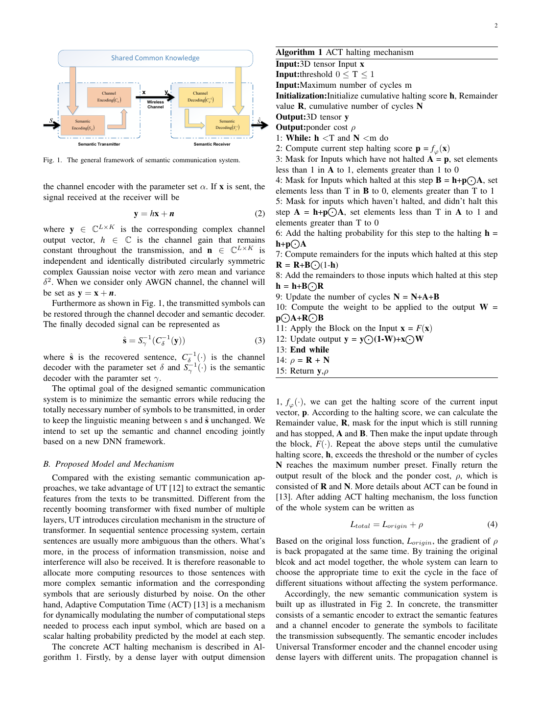
架构或方法图截图页。来源：Semantic Communication With Adaptive Universal Transformer。 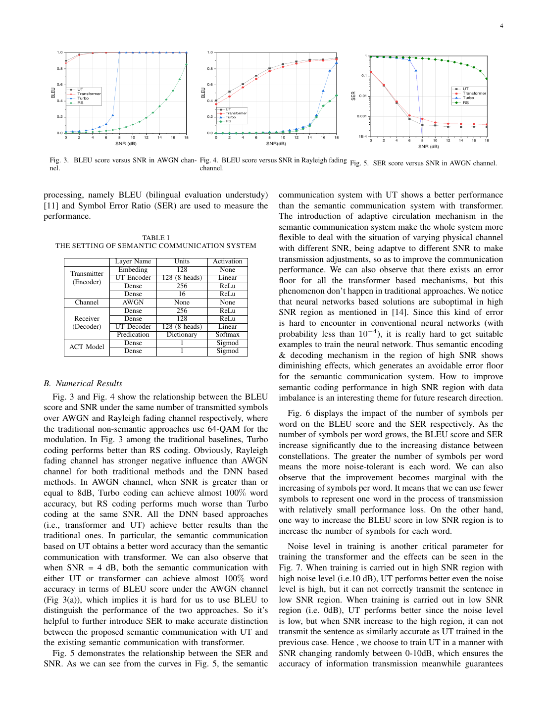
关键结果图/表截图页。来源：Semantic Communication With Adaptive Universal Transformer。
Adaptive Bit Rate Control in Semantic Communication With Incremental Knowledge-Based HARQ
2022 数字式文本 SemCom 核心
基本信息 Qing Zhou, Rongpeng Li, Zhifeng Zhao, Chenghui Peng, Hang Zhang。IEEE Open Journal of the Communications Society, 2022。来源：IEEE / arXiv；标识：arXiv:2203.06634; DOI 10.1109/OJCOMS.2022.3189023。外部来源 。
任务与实验 文本数据集以 Europarl 类机器翻译语料为主；baseline 包括固定长度 DeepSC、传统编码调制、普通 HARQ / incremental redundancy HARQ；指标为 BLEU、语义相似度、传输 bit 数和重传次数。
Introduction 讲述逻辑 传统 HARQ 以 bit 正确为目标，语义通信则更关心恢复意义。论文指出固定 bit 长度语义编码在好信道浪费、坏信道不足；直接重复发送也忽视已恢复知识。作者提出多 bit-length 语义编码和 incremental knowledge HARQ，让编码率和重传内容随信道/语义反馈调整。
可控机制与方法细节 语义编码器产生不同长度的语义 bit 表示；policy network 在每轮选择编码 bit rate。接收端通过语义解码和 denoiser 恢复文本，反馈机制判断是否需要追加知识。IK-HARQ 的关键是后续重传不是简单重复，而是补充此前未可靠恢复的语义增量。
不固定传输符号的具体方式 可控轴： 句子级 bit rate 与增量重传次数控制信号： 信道条件、语义恢复反馈、策略网络输出的编码 bit 长度符号/码率灵活性： 同一句文本不是固定映射成固定 bit 长度；系统可先发较短语义编码，失败或语义不足时再通过 IK-HARQ 发增量知识。
信道处理 论文考虑有噪信道下的 bit/语义编码错误，并通过 denoising 与 HARQ 反馈处理。decoder 得到的是经信道污染后再处理的语义表示，不是默认无误 bitstream。
主要结果 结果显示 adaptive bit rate 可在不同 SNR 下减少冗余 bit，同时 IK-HARQ 在低 SNR 下提升语义恢复质量。
为何不是纯优化式论文 核心贡献是多长度语义编码器、策略网络和 IK-HARQ 流程，不是离线求解传输量分配。
局限性与 Codex 判断 适用对象主要是文本，语义反馈与增量知识的定义依赖特定语义编码器；对现代 LLM token 级通信的适配仍需要重新设计。
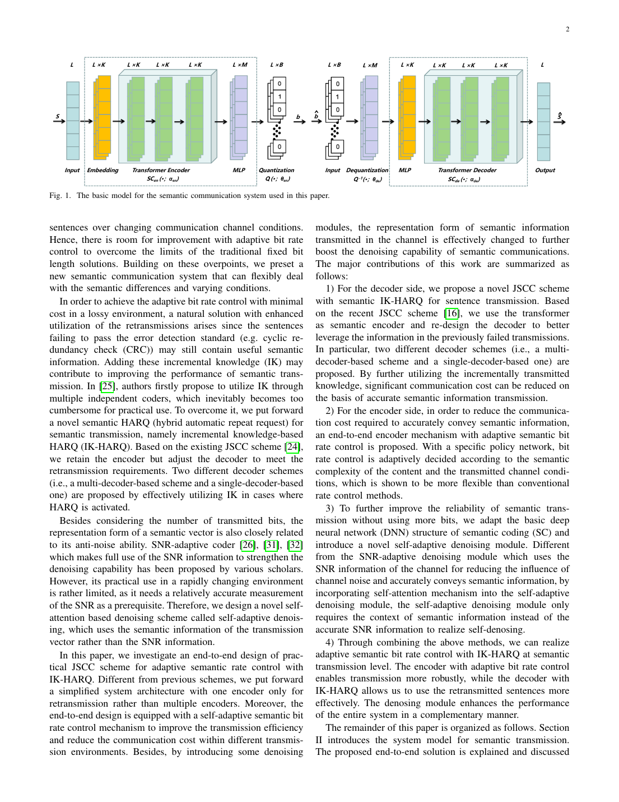
架构或方法图截图页。来源：Adaptive Bit Rate Control in Semantic Communication With Incremental Knowledge-Based HARQ。 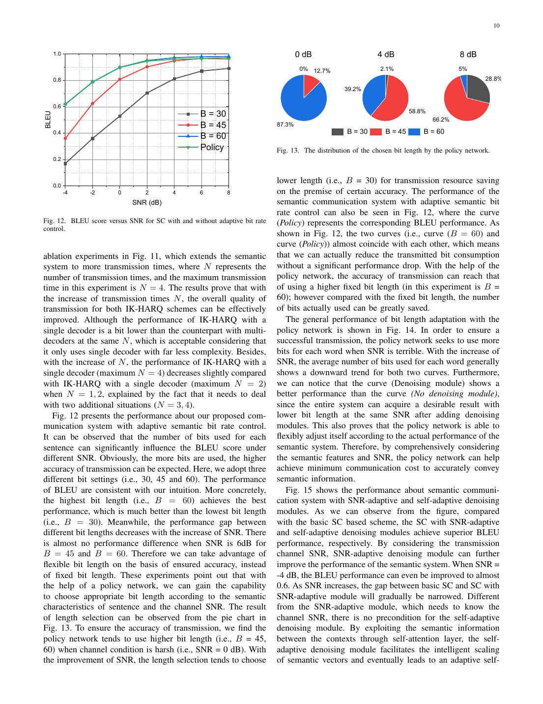
关键结果图/表截图页。来源：Adaptive Bit Rate Control in Semantic Communication With Incremental Knowledge-Based HARQ。
Channel-Adaptive Wireless Image Transmission With OFDM
2022 模拟式 OFDM DeepJSCC 相关核心
基本信息 Tao Wu, Zhongwei Si, Jincheng Dai, Kai Niu, Mingyu Lu, Hang Zhang。IEEE Wireless Communications Letters, 2022。来源：IEEE / arXiv；标识：arXiv:2205.02417; DOI 10.1109/LWC.2022.3204837。外部来源 。
任务与实验 CIFAR-10、Kodak 等图像；baseline 包括 DeepJSCC、OFDM-guided JSCC、传统 BPG/LDPC 组合；指标为 PSNR/MS-SSIM 和 CBR。
Introduction 讲述逻辑 普通 DeepJSCC 往往假设平坦 AWGN，而真实宽带 OFDM 子载波质量不同。固定特征-子载波映射会把重要语义特征放到差子载波上。论文把 CSI 引入编码器注意力，使语义特征根据频域信道自适应分配。
可控机制与方法细节 编码器提取图像 latent 后，dual attention / channel-adaptive 模块根据 CSI 和噪声调整特征重要性与 OFDM 子载波映射。输出经功率归一化送入 OFDM 信道，接收端解调后由 decoder 重建。
不固定传输符号的具体方式 可控轴： 子载波 CSI 与噪声条件下的特征映射和功率/重要性分配控制信号： CSI、SNR/noise level、latent feature符号/码率灵活性： 符号数通常由给定 CBR 决定，但不同子载波和信道状态下发送特征的映射与权重会变；属于 channel-condition controllable。
信道处理 考虑 OFDM 频率选择性衰落与 AWGN。decoder 接收连续 noisy OFDM symbols；没有离散 bit error，而是连续子载波噪声/衰落。
主要结果 在频率选择性信道下，CSI-aware 映射明显优于忽略 CSI 的 DeepJSCC，尤其在低 SNR 或子载波质量不均时。
为何不是纯优化式论文 核心在编码器注意力和 OFDM 特征映射网络，而不是独立求解 OFDM 资源分配。
局限性与 Codex 判断 不改变总 channel use，因此对“可变 payload”的支持弱于 adaptive-rate 方法；更像信道自适应语义映射。
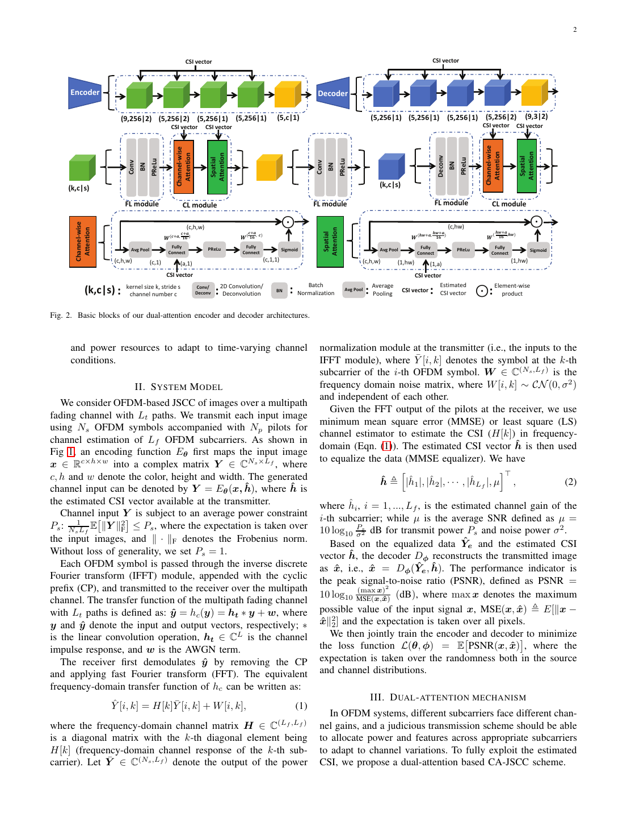
架构或方法图截图页。来源：Channel-Adaptive Wireless Image Transmission With OFDM。 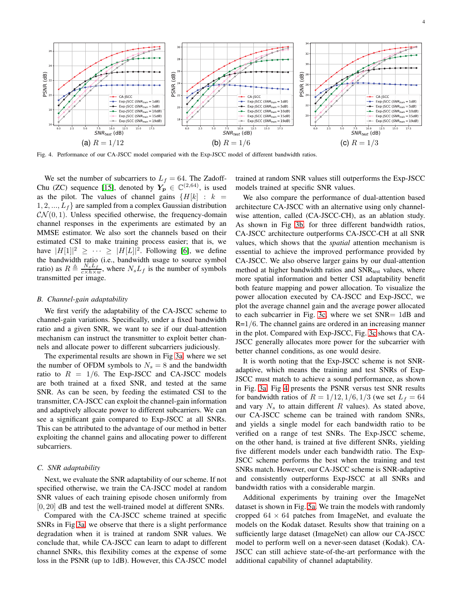
关键结果图/表截图页。来源：Channel-Adaptive Wireless Image Transmission With OFDM。
Deep Joint Source-Channel Coding for Wireless Image Transmission With Adaptive Rate Control
2022 模拟式图像 DeepJSCC 核心
基本信息 Minsu Yang, Hyeji Kim。IEEE ICASSP, 2022。来源：IEEE / arXiv；标识：arXiv:2110.04456。外部来源 。
任务与实验 常用 CIFAR-10 等图像数据集；baseline 为固定率 DeepJSCC、不同 rate 单独训练模型、BPG+capacity 或 BPG+LDPC 类分离方案；指标包括 PSNR/MS-SSIM 与 bandwidth ratio。
Introduction 讲述逻辑 早期 DeepJSCC 对固定 bandwidth ratio 训练一个固定模型，部署时如果图像内容简单或信道很好，仍消耗同样符号数；若信道差，固定率又可能不足。本文把 adaptive rate control 放进神经 JSCC，使同一网络可服务多个 rate。
可控机制与方法细节 图像经 CNN/attention 编码成 latent feature。Rate-control policy 根据内容特征和 SNR 产生 gating mask，选择部分特征通道送入功率归一化和 AWGN 信道。未发送特征在接收端补零或由 decoder 隐式恢复。训练时联合优化重建损失和 rate 约束。
不固定传输符号的具体方式 可控轴： 每幅图像的 channel use / compression ratio控制信号： 图像内容与 SNR，经 policy network 产生掩码或 rate decision符号/码率灵活性： 单一模型支持多码率，并能根据输入图像和信道条件动态选择发送多少 latent channel。
信道处理 信道为 AWGN。decoder 接收带噪连续 latent；控制的是连续符号数量，不涉及数字 bit/index 错误。
主要结果 在相同平均 channel use 下，adaptive rate 对不同图像分配不同 latent 数，通常比固定率 DeepJSCC 有更好 rate-distortion 表现。
为何不是纯优化式论文 虽然有 rate 约束，但核心是可训练的 policy/gating 编码器，而不是外层资源优化模型。
局限性与 Codex 判断 rate control 粒度主要是 latent channel/gating；没有面向实际数字链路的 packet、bit 或调制符号约束。
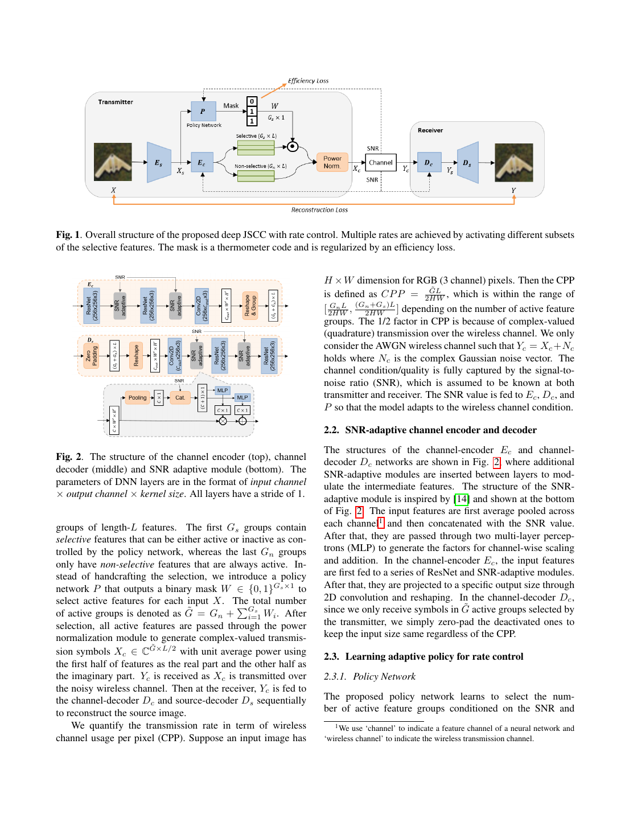
架构或方法图截图页。来源：Deep Joint Source-Channel Coding for Wireless Image Transmission With Adaptive Rate Control。 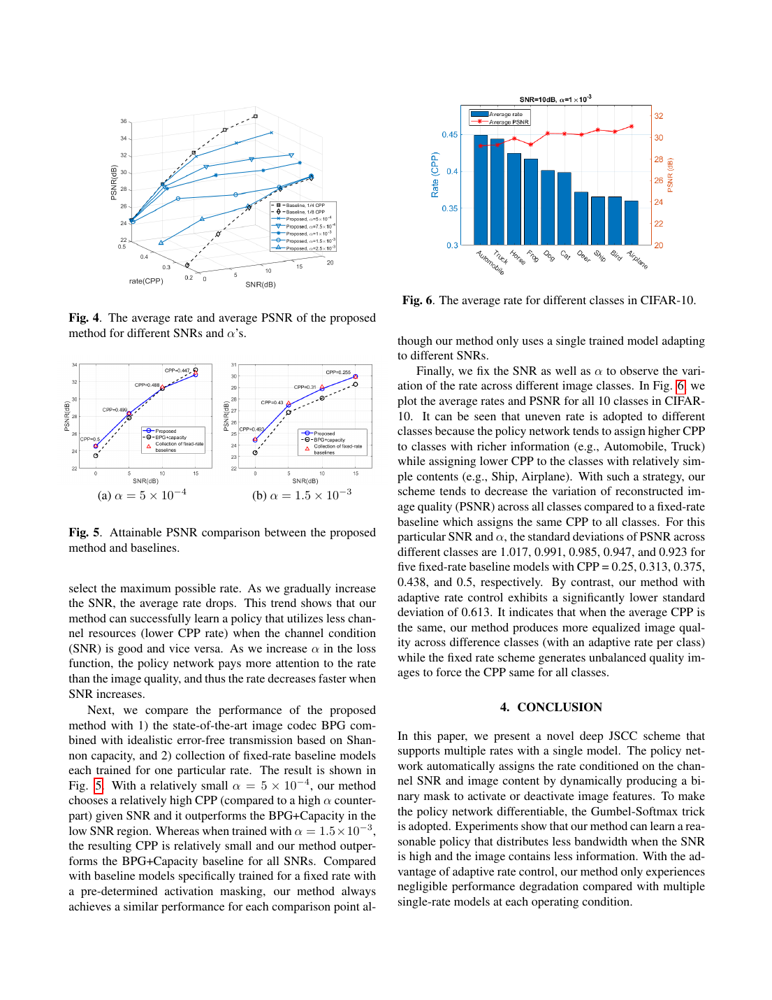
关键结果图/表截图页。来源：Deep Joint Source-Channel Coding for Wireless Image Transmission With Adaptive Rate Control。
Nonlinear Transform Source-Channel Coding for Semantic Communications
2022 模拟式/混合式 NTSCC 核心
基本信息 Jincheng Dai, Sixian Wang, Kailin Tan, Zhongwei Si, Xiaoqi Qin, Kai Niu, Ping Zhang。IEEE Journal on Selected Areas in Communications, 2022。来源：IEEE / arXiv；标识：arXiv:2112.10961。外部来源 。
任务与实验 CIFAR-10、Kodak、CLIC2021 等不同分辨率图像；baseline 包括 BPG+LDPC、BPG+capacity、DeepJSCC 及神经压缩方案；指标为 PSNR、MS-SSIM、LPIPS、CBR。
Introduction 讲述逻辑 论文认为传统 DeepJSCC 直接把源映射成连续符号，缺乏可解释的 rate 控制；而传统压缩+信道编码虽有 bitstream，却会在低 SNR 下 cliff。NTSCC 引入神经压缩中的 nonlinear transform 与 hyperprior，把语义 latent 的概率结构用于自适应传输。
可控机制与方法细节 源图像先经分析变换得到 latent y，hyperprior z 估计 y 的条件分布。高熵 latent 分量被分配更多信道资源，低熵分量用更少资源。超先验可作为数字侧信息，主 latent 经深度 JSCC 进行模拟传输，解码端利用 hyperprior refined codec。
不固定传输符号的具体方式 可控轴： 基于 latent 熵的 patch-wise variable-length / adaptive bandwidth控制信号： latent 条件熵、hyperprior、目标 rate-distortion 权重符号/码率灵活性： 不是把每个图像块映射成等长 channel symbols，而是用熵模型判断哪些 latent 需要更多带宽。
信道处理 主要建模 AWGN。主语义 latent 经过连续有噪信道；hyperprior 侧信息按论文设定可以数字可靠传输或计入带宽成本。没有 VQ index 错误，但明确处理了连续 latent 的信道噪声。
主要结果 相对传统 DeepJSCC 可节省约 20% 带宽，并在大尺寸图像上提供更稳定的感知质量。
为何不是纯优化式论文 自适应来自熵模型、hyperprior 和编码网络结构，而不是只在系统层分配数据量。
局限性与 Codex 判断 hybrid 侧信息的实际数字保护成本依赖实现；如果严格落到 packetized digital system，还需要额外的 bitstream/error 设计。
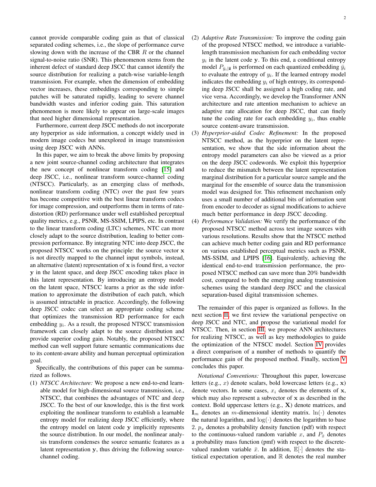
架构或方法图截图页。来源：Nonlinear Transform Source-Channel Coding for Semantic Communications。 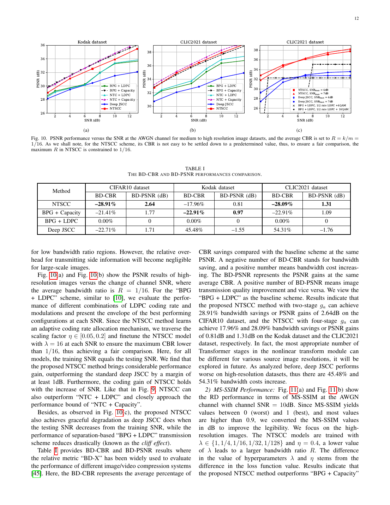
关键结果图/表截图页。来源：Nonlinear Transform Source-Channel Coding for Semantic Communications。
Deep Joint Source-Channel Coding for Wireless Image Transmission With Entropy-Aware Adaptive Rate Control
2023 模拟式 entropy-aware DeepJSCC 核心
基本信息 Weixuan Chen, Qianqian Yang, Zehui Xiong, et al.。IEEE GLOBECOM, 2023。来源：IEEE / arXiv；标识：arXiv:2306.02825。外部来源 。
任务与实验 图像数据集与 DeepJSCC 常规设置；baseline 包括 fixed DeepJSCC、DeepJSCC+rate adaptation、BPG+LDPC；指标为 PSNR、平均 CR/CBR。
Introduction 讲述逻辑 固定率 DeepJSCC 忽视图像内容差异，已有 adaptive 方法多只在 feature group 级截断，粒度粗。本文把 feature map entropy 作为语义信息量估计，进一步进行 feature map selection 与 symbol pruning。
可控机制与方法细节 语义 encoder 得到 feature map z；Policy Network 1 基于 z、entropy 和 SNR 产生二值 mask，选择要发送的 feature maps；Policy Network 2 输出 pruning ratio 或一热剪枝索引，在保留 map 内删除冗余符号。发送端同时传输裁剪后的特征和必要的剪枝索引，接收端按 mask/索引补零后解码。
不固定传输符号的具体方式 可控轴： feature-map entropy 与 SNR 驱动的二级 pruning控制信号： feature maps、2D entropy、SNR，两个 policy network 输出 mask/pruning ratio符号/码率灵活性： 发送端先选 feature map，再裁剪每个 feature map 内的符号；实际发送符号数随图像内容和 SNR 改变。
信道处理 AWGN 连续信道；信道影响被 SNR 条件纳入 policy 与 decoder。没有数字 bit flip，但能处理被噪声污染和被裁剪的连续 latent。
主要结果 低 SNR 下倾向保留更多特征，高 SNR 下自动降低 CR；相比 SOTA adaptive-rate 方法在相近 CR 下有更好 PSNR。
为何不是纯优化式论文 控制器是端到端训练的 policy networks，且直接作用于语义 feature maps。
局限性与 Codex 判断 需要 side information 告知 mask/pruning，实际协议开销常被简化；剪枝索引若出错的鲁棒性未充分展开。
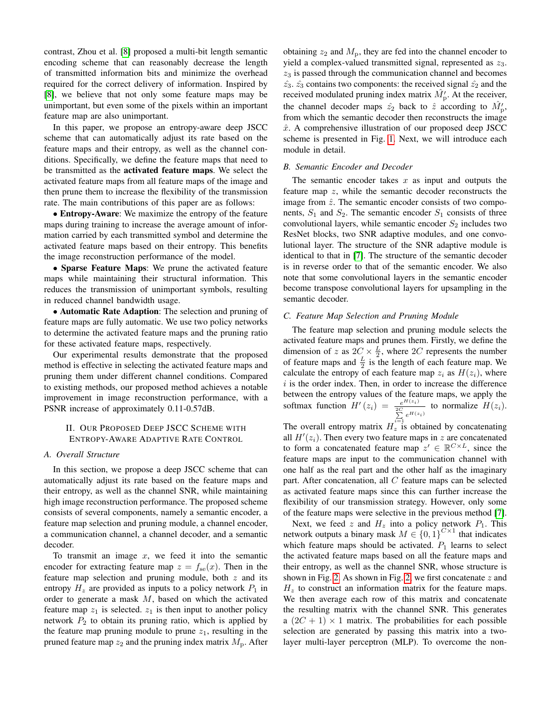
架构或方法图截图页。来源：Deep Joint Source-Channel Coding for Wireless Image Transmission With Entropy-Aware Adaptive Rate Control。 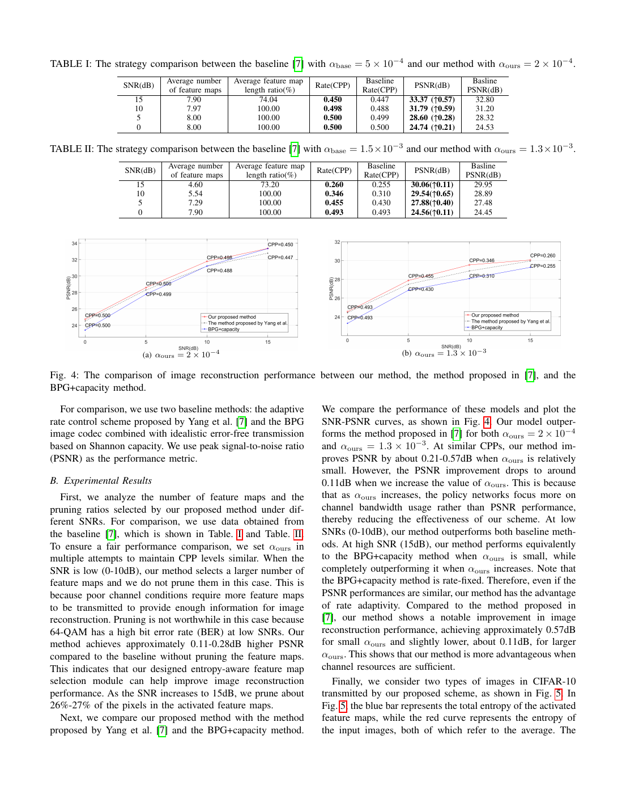
关键结果图/表截图页。来源：Deep Joint Source-Channel Coding for Wireless Image Transmission With Entropy-Aware Adaptive Rate Control。
DeepJSCC-l++: Robust and Bandwidth-Adaptive Wireless Image Transmission
2023 模拟式 bandwidth-adaptive DeepJSCC 核心
基本信息 Nikolaos B. Bian, Deniz Gunduz, et al.。IEEE GLOBECOM, 2023。来源：IEEE / arXiv；标识：arXiv:2305.13161; IEEE 10436878。外部来源 。
任务与实验 CIFAR/Kodak 等图像；baseline 为 DeepJSCC、DeepJSCC-l、BPG+LDPC/capacity；指标包括 PSNR、MS-SSIM、不同 bandwidth ratio 下的鲁棒性。
Introduction 讲述逻辑 DeepJSCC-l 解决了部分带宽自适应问题，但多 rate/SNR 泛化仍有限。本文把目标带宽和 SNR 作为条件输入，让模型在部署时按需求调整传输符号数。
可控机制与方法细节 以 Vision Transformer 为 backbone，编码器/解码器中注入 rate/SNR side information。模型通过 latent-channel prioritization 或 truncation 控制发送维度，按目标 bandwidth ratio 截取相应数量的 channel symbols。
不固定传输符号的具体方式 可控轴： 目标 bandwidth ratio 与 SNR 作为 side information控制信号： target bandwidth ratio、SNR、图像内容符号/码率灵活性： 一个 ViT/DeepJSCC-l++ 模型覆盖多带宽和多 SNR，无需为每个 bandwidth ratio 单独训练。
信道处理 AWGN/fading 下的连续符号传输，SNR 作为条件输入。decoder 接收的是被噪声污染且长度由 bandwidth ratio 控制的 latent。
主要结果 单一模型在多个 bandwidth ratio 下接近或超过多模型 baseline，显著提升部署灵活性。
为何不是纯优化式论文 不是外部求解带宽分配，而是把带宽目标注入 JSCC 模型并改变 latent 使用量。
局限性与 Codex 判断 rate 控制通常依赖预设 target ratio；是否能完全基于输入自动决定 rate 还需要额外 policy。
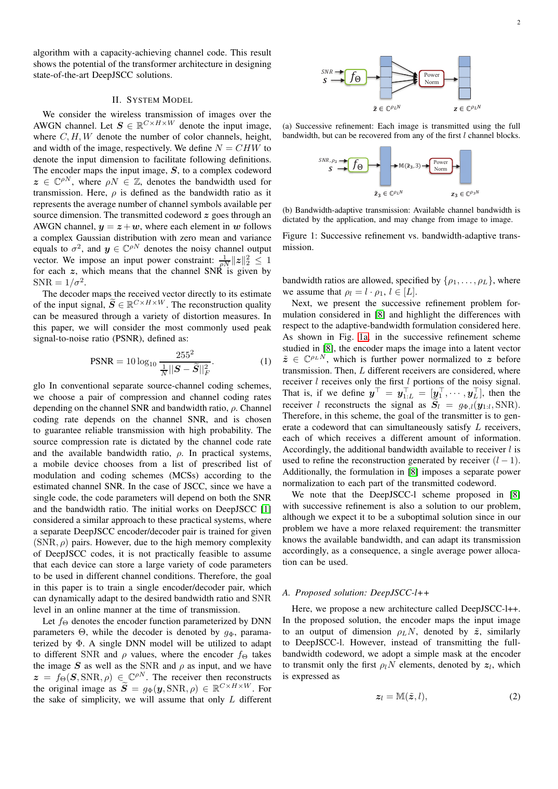
架构或方法图截图页。来源：DeepJSCC-l++: Robust and Bandwidth-Adaptive Wireless Image Transmission。 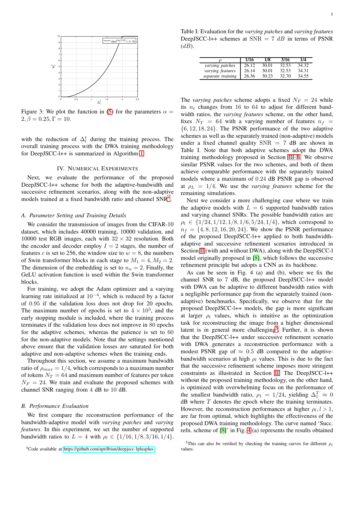
关键结果图/表截图页。来源：DeepJSCC-l++: Robust and Bandwidth-Adaptive Wireless Image Transmission。
Improved Nonlinear Transform Source-Channel Coding to Catalyze Semantic Communications
2023 模拟式 enhanced NTSCC 核心
基本信息 Sixian Wang, Jincheng Dai, Kailin Tan, Zhongwei Si, Kai Niu, Mingyu Lu, Hang Zhang, Ping Zhang。IEEE Journal of Selected Topics in Signal Processing, 2023。来源：IEEE / arXiv；标识：arXiv:2303.14637; DOI 10.1109/JSTSP.2023.3304140。外部来源 。
任务与实验 常用 Kodak/CLIC 类图像传输；baseline 为 NTSCC、WITT/DeepJSCC、BPG+LDPC/capacity；指标为 PSNR、MS-SSIM、LPIPS 和 CBR。
Introduction 讲述逻辑 NTSCC 证明了熵建模对 SemCom 重要，但多 rate、多信道状态下往往仍需训练多个模型或做粗粒度配置。本文改进上下文熵模型和响应网络，让一个模型覆盖更多传输条件。
可控机制与方法细节 引入 contextual entropy model 评估 latent 信息量；rate/channel response network 根据目标 rate 和信道状态调节编码/解码；online latent feature editing 在不重训完整模型的情况下微调待传 latent。
不固定传输符号的具体方式 可控轴： contextual entropy、rate/channel response network 与 latent feature editing控制信号： contextual entropy、目标 CBR、SNR/channel state符号/码率灵活性： 同一模型通过响应网络处理多 rate 和多 channel state；latent feature 可被在线编辑以满足不同传输条件。
信道处理 连续 latent 经 AWGN/无线信道，模型在训练中纳入噪声；不涉及离散 index 错误。
主要结果 多 rate、多 SNR 下保持较平滑的 rate-distortion 曲线，减少为每个条件单独训练模型的需求。
为何不是纯优化式论文 可控性由 entropy model 和 response network 实现，属于编码器结构设计。
局限性与 Codex 判断 控制主要依赖隐式网络调制，可解释性不如数字 bit allocation；实际协议如何承载 response 参数仍需设计。
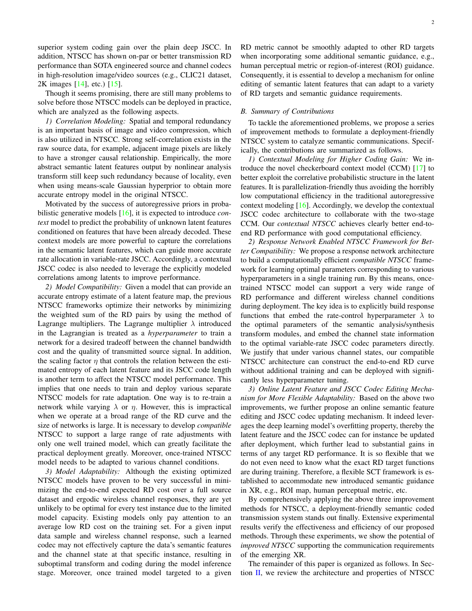
架构或方法图截图页。来源：Improved Nonlinear Transform Source-Channel Coding to Catalyze Semantic Communications。 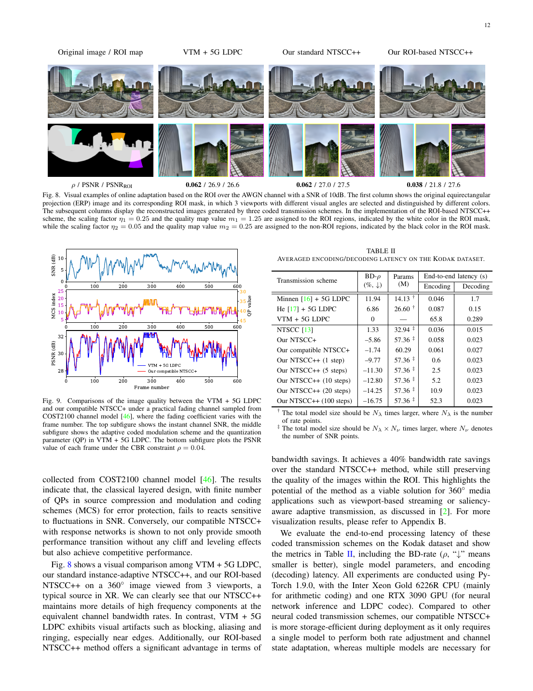
关键结果图/表截图页。来源：Improved Nonlinear Transform Source-Channel Coding to Catalyze Semantic Communications。
Predictive and Adaptive Deep Coding for Wireless Image Transmission in Semantic Communication
2023 模拟式 predictive/adaptive DeepJSCC 核心
基本信息 Wei Zhang, Zehui Xiong, et al.。IEEE Transactions on Wireless Communications, 2023。来源：IEEE；标识：IEEE 10015684; DOI 10.1109/TWC.2023.3234408。外部来源 。
任务与实验 图像传输实验；baseline 包括 fixed DeepJSCC、DeepJSCC-V、BPG+LDPC/capacity 等；指标包括目标 PSNR 达成率、平均 CR、PSNR/MS-SSIM。
Introduction 讲述逻辑 DeepJSCC 在固定 CR 下性能好，但实际系统常需要“达到指定质量即可”，不同图像在同一 SNR 下所需符号数不同。PADC 引入预测模块先估计质量，再自适应选择编码率。
可控机制与方法细节 DeepJSCC-V 支持 variable code length；OraNet 预测给定图像、SNR 和 CR 下的重建质量；CR optimizer 搜索满足目标 PSNR 的最低 CR。发送端据此截取或生成对应长度的 channel symbols。
不固定传输符号的具体方式 可控轴： 目标质量约束下的 compression ratio 选择控制信号： 图像内容、SNR、候选 compression ratio、目标 PSNR/quality符号/码率灵活性： 对每个图像和信道条件选择满足目标质量的最小 CR，而不是固定符号数。
信道处理 考虑 AWGN/fading 连续信道，OraNet 显式以 SNR 为输入预测信道下质量。接收端得到带噪连续 latent。
主要结果 在保证目标质量时显著降低平均 CR，复杂图像/低 SNR 自动用更多符号。
为何不是纯优化式论文 虽然有优化器，但核心包含 DeepJSCC-V 与 OraNet，优化变量作用于可变长度神经 codec。
局限性与 Codex 判断 需要可靠质量预测器；若图像分布或信道模型偏移，CR optimizer 可能低估所需资源。
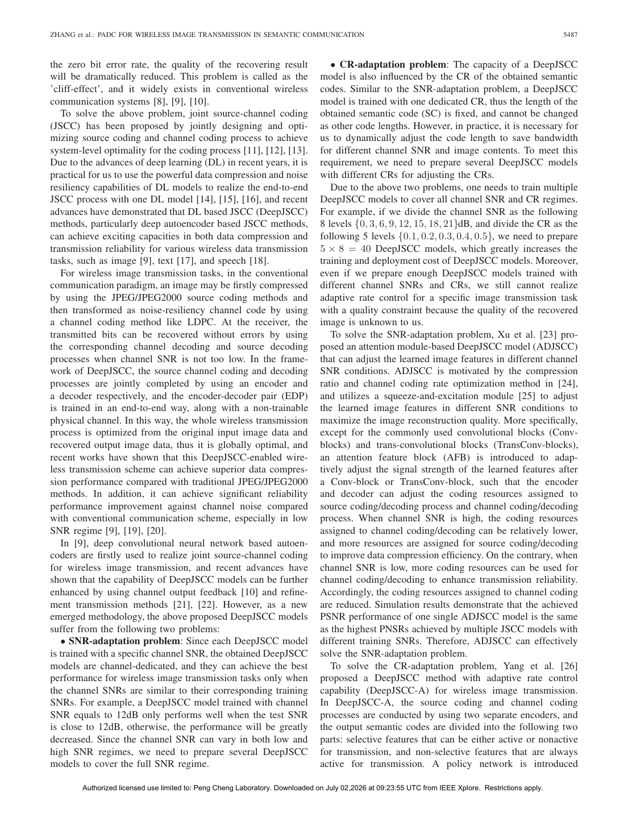
架构或方法图截图页。来源：Predictive and Adaptive Deep Coding for Wireless Image Transmission in Semantic Communication。 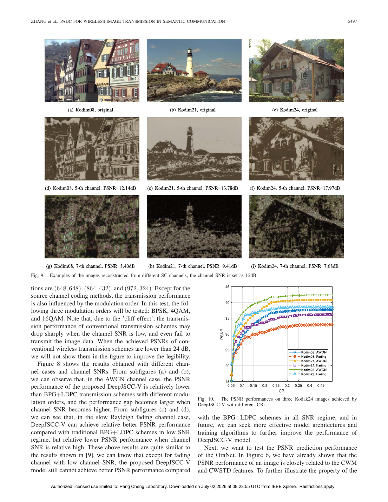
关键结果图/表截图页。来源：Predictive and Adaptive Deep Coding for Wireless Image Transmission in Semantic Communication。
Semantic Communications With Variable-Length Coding for Extended Reality
2023 数字/语义信道编码，XR 核心
基本信息 Wenhao Zhang, Yang Shi, H. Vincent Poor, Shuguang Cui。IEEE Journal of Selected Topics in Signal Processing, 2023。来源：IEEE / arXiv；标识：arXiv:2302.08645; DOI 10.1109/JSTSP.2023.3300509。外部来源 。
任务与实验 实验面向 XR/视觉内容传输，比较固定长度语义编码、传统压缩传输和已有 DeepJSCC/variable-rate 方法；指标关注重建质量、语义质量和传输长度。
Introduction 讲述逻辑 XR 业务要求低延迟和高沉浸质量，固定长度语义编码会把相同资源分配给重要性不同的内容。作者提出变量长度语义-信道编码，目标是在不牺牲 XR 体验的情况下减少冗余传输。
可控机制与方法细节 系统先用 rate allocation network 估计语义信息的最佳码长，再用 proxy functions 使 variable-length coding 可端到端训练。编码器与信道编码联合产生不同长度的符号序列，decoder 根据接收序列恢复 XR 语义内容。
不固定传输符号的具体方式 可控轴： 语义内容与噪声容忍度驱动的 variable-length semantic-channel coding控制信号： 源内容语义量、对信道噪声的容忍度、rate allocation network 输出符号/码率灵活性： 明确提出每个语义样本的 code length 可变；语义少或容错强的内容用短码，语义复杂/敏感的内容用长码。
信道处理 考虑有噪无线信道，variable-length code 经信道后由语义 decoder 处理；论文重点是码长自适应而非显式 VQ index error。
主要结果 在相同语义质量目标下减少平均传输长度；复杂内容自动分配更长码字。
为何不是纯优化式论文 虽然名字包含 allocation，但它将码长估计嵌入可训练 variable-length semantic-channel coding，而不是纯系统优化。
局限性与 Codex 判断 实验场景较专，rate allocation network 的泛化依赖训练分布；对真实 packet loss / HARQ 的处理仍有限。
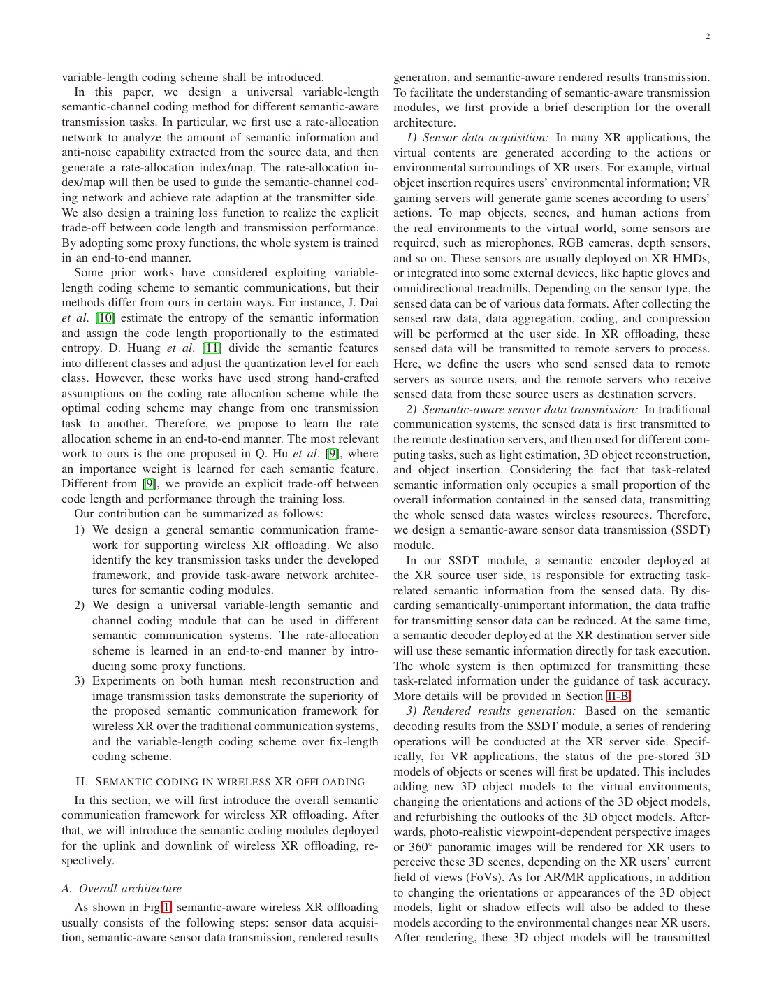
架构或方法图截图页。来源：Semantic Communications With Variable-Length Coding for Extended Reality。 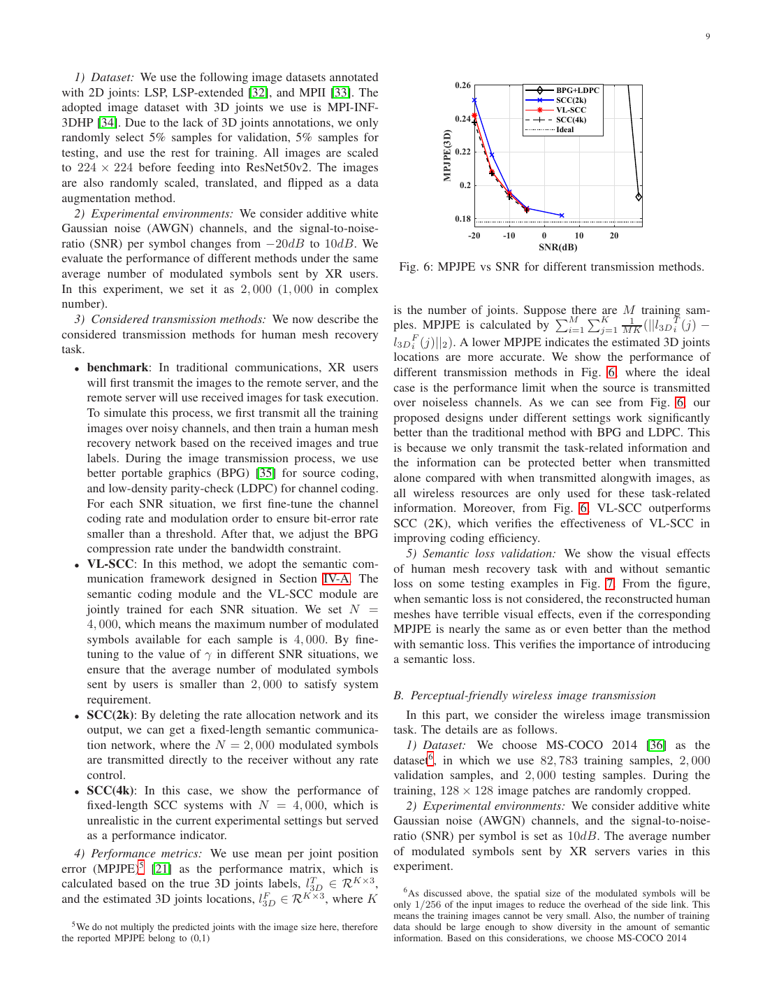
关键结果图/表截图页。来源：Semantic Communications With Variable-Length Coding for Extended Reality。
Toward Adaptive Semantic Communications: Efficient Data Transmission via Online Learned Nonlinear Transform Source-Channel Coding
2023 模拟式 online-adaptive NTSCC 核心
基本信息 Jincheng Dai, Kailin Tan, Sixian Wang, Zhongwei Si, Kai Niu, Mingyu Lu, Hang Zhang, Ping Zhang。IEEE Journal on Selected Areas in Communications, 2023。来源：IEEE / arXiv；标识：arXiv:2211.04339; DOI 10.1109/JSAC.2023.3288246。外部来源 。
任务与实验 Kodak、CLIC 等图像；baseline 包括 NTSCC、DeepJSCC、BPG+LDPC/capacity、VVC/5G LDPC 等；指标为 PSNR、MS-SSIM、LPIPS 与带宽开销。
Introduction 讲述逻辑 已有 NTSCC 具有熵模型和 rate control，但仍多为离线训练模型。真实语义通信中源内容和信道状态持续变化，固定模型难以在每次传输中都最优。本文提出 online learned NTSCC，把部署时自适应作为核心。
可控机制与方法细节 以 NTSCC 为基础，发送前根据当前源图像和信道对部分网络/latent 表示进行在线学习或快速更新。接收端使用同步的 codec refinement 信息恢复图像。自适应目标是直接优化当前样本的 rate-distortion。
不固定传输符号的具体方式 可控轴： 面向单个源样本和当前信道的在线自适应控制信号： 待传图像、当前信道状态、在线优化后的 codec / representation符号/码率灵活性： 不只在离线阶段给定几个 rate；部署时可针对当前图像和信道在线微调表示或编解码器，实现 instance-wise adaptation。
信道处理 主要是 AWGN/无线 fading 条件下的连续 latent 传输；自适应过程显式考虑信道噪声统计。
主要结果 online adaptation 可在相同 CBR 下提升重建质量，特别是在源分布或信道与离线训练不完全匹配时。
为何不是纯优化式论文 核心是在线更新语义 codec / latent，而不是仅求解资源量分配。
局限性与 Codex 判断 在线学习带来额外计算、同步和时延开销；低时延应用是否可接受需要实测。
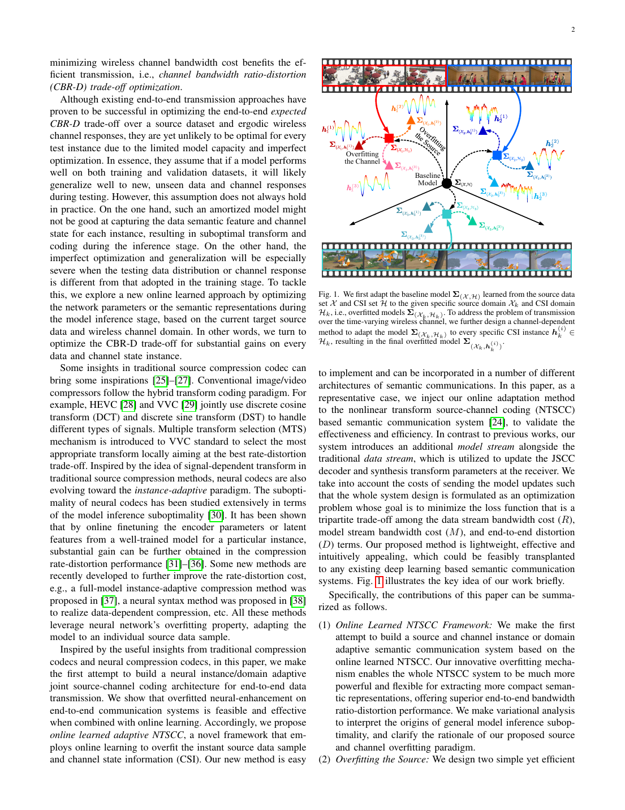
架构或方法图截图页。来源：Toward Adaptive Semantic Communications: Efficient Data Transmission via Online Learned Nonlinear Transform Source-Channel Coding。 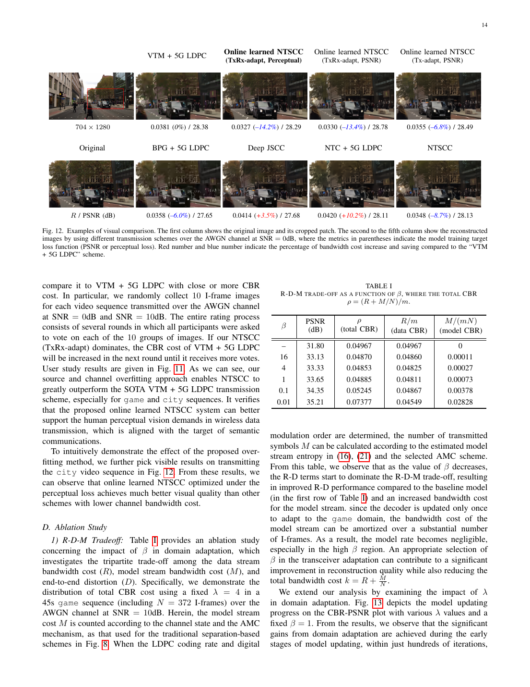
关键结果图/表截图页。来源：Toward Adaptive Semantic Communications: Efficient Data Transmission via Online Learned Nonlinear Transform Source-Channel Coding。
WITT: A Wireless Image Transmission Transformer for Semantic Communications
2023 模拟式 Transformer JSCC 相关核心
基本信息 Ke Yang, Sixian Wang, Jincheng Dai, Kailin Tan, Kai Niu, Ping Zhang。IEEE ICASSP, 2023。来源：IEEE / arXiv；标识：arXiv:2211.00937。外部来源 。
任务与实验 Kodak、CLIC、DIV2K/CIFAR 类图像传输实验；baseline 包括 BPG+LDPC、BPG+capacity、DeepJSCC、NTSCC 等；指标包括 PSNR、MS-SSIM、LPIPS。
Introduction 讲述逻辑 CNN DeepJSCC 对长距离依赖和多分辨率泛化有限，也常需为不同 SNR 训练多个模型。WITT 将 Swin Transformer 引入语义通信，并用信道状态调制 latent 表示。
可控机制与方法细节 图像被切成 patch/token，通过 Swin Transformer 编码为语义 latent。Spatial modulation 模块将 CSI/SNR 注入网络，对 latent 进行缩放和重加权，然后通过连续信道传输并重建。
不固定传输符号的具体方式 可控轴： SNR / CSI 条件下的 spatial modulation 与 latent scaling控制信号： 信道状态信息、SNR、图像 patch/token 表示符号/码率灵活性： 一套 Transformer 模型可适配不同分辨率和信道状态；payload 长度通常由配置固定，但 latent 内容和强度随信道控制。
信道处理 通常测试 AWGN 与 fading 条件，decoder 接收带噪连续 latent。信道条件作为 side information 注入网络。
主要结果 在多 SNR、多分辨率设置下保持较好重建质量，说明信道条件显式注入可提升泛化。
为何不是纯优化式论文 控制发生在 Transformer 编码网络内部的条件调制，不是外层资源优化。
局限性与 Codex 判断 它是 channel-adaptive 而非 rate-adaptive；若用户最关心“不固定传输符号数”，WITT 应作为背景核心而非最强证据。
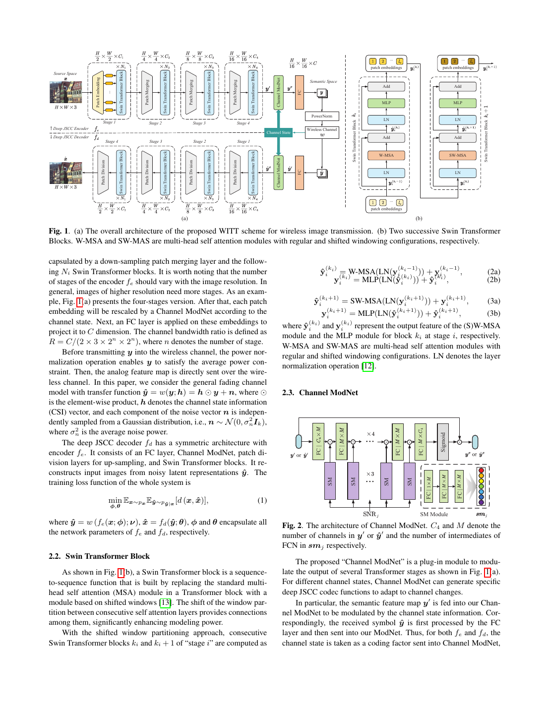
架构或方法图截图页。来源：WITT: A Wireless Image Transmission Transformer for Semantic Communications。 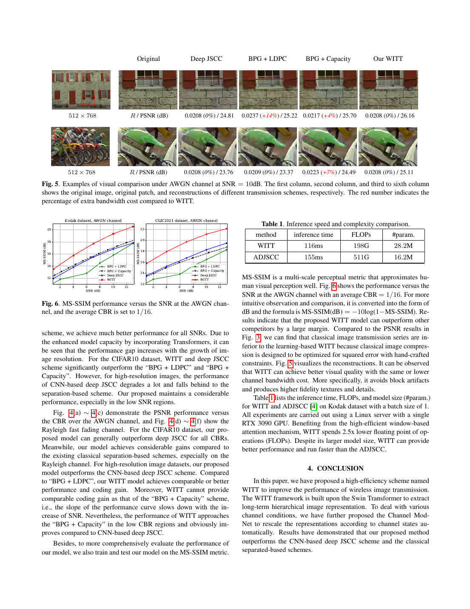
关键结果图/表截图页。来源：WITT: A Wireless Image Transmission Transformer for Semantic Communications。
Deep Joint Source-Channel Coding for Adaptive Image Transmission Over MIMO Channels
2024 模拟式 MIMO DeepJSCC 相关核心
基本信息 Tao Wu, Jincheng Dai, Sixian Wang, Zhongwei Si, Kai Niu, Ping Zhang。IEEE Transactions on Wireless Communications, 2024。来源：IEEE / arXiv；标识：arXiv:2309.00470; IEEE 10597355。外部来源 。
任务与实验 Kodak/CLIC 等图像；baseline 包括传统 MIMO 传输、DeepJSCC、channel-adaptive OFDM/JSCC；指标为 PSNR/MS-SSIM 和多天线/SNR 设置。
Introduction 讲述逻辑 SISO/AWGN 下训练的 DeepJSCC 难以应对 MIMO 信道矩阵、空间流和天线数变化。论文用 Transformer 自注意力建模源特征与 MIMO 信道之间的耦合，实现 channel-adaptive 语义映射。
可控机制与方法细节 编码器提取图像 token/latent；CSI embedding 注入 Transformer，使网络学习在不同空间子信道上分配语义特征和功率。接收端使用对应 MIMO 检测/解码和语义 decoder 重建图像。
不固定传输符号的具体方式 可控轴： MIMO channel matrix、SNR、天线数驱动的 feature mapping/power allocation控制信号： CSI、SNR、antenna configuration、图像 latent符号/码率灵活性： 同一 ViT/DeepJSCC-MIMO 模型适配不同信道和天线配置；主要控制 mapping 和功率，而非任意改变 payload 长度。
信道处理 MIMO fading + AWGN。信道影响连续 latent，decoder 接收 MIMO 检测后的带噪表示。
主要结果 在不同天线数和 SNR 条件下比固定映射更稳，说明信道矩阵可作为语义编码控制信号。
为何不是纯优化式论文 CSI 被注入编码网络并改变特征映射，不是外部资源分配。
局限性与 Codex 判断 payload 数量通常按配置固定；可控性更偏物理层适配。
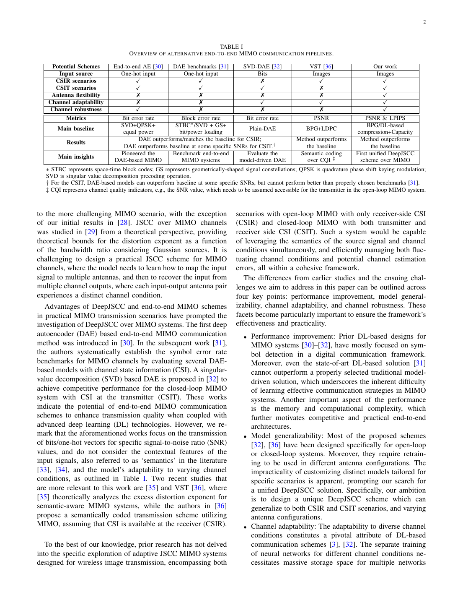
架构或方法图截图页。来源：Deep Joint Source-Channel Coding for Adaptive Image Transmission Over MIMO Channels。 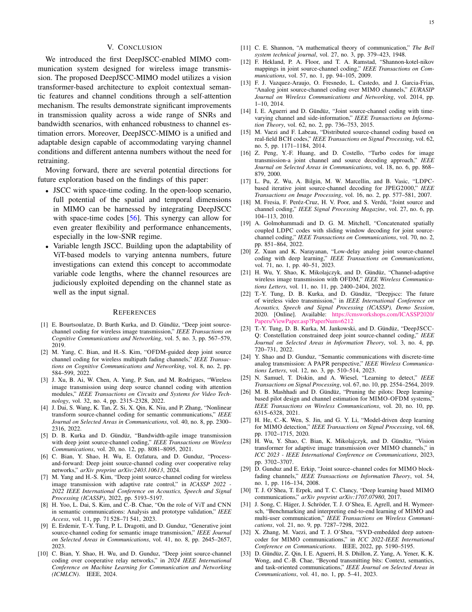
关键结果图/表截图页。来源：Deep Joint Source-Channel Coding for Adaptive Image Transmission Over MIMO Channels。
Rate-Adaptive Coding Mechanism for Semantic Communications With Multi-Modal Data
2024 数字/多模态 SemCom 边界核心
基本信息 Zhenzi Zhang, Mingzhe Chen, Walid Saad, Merouane Debbah, et al.。IEEE Transactions on Communications, 2024。来源：IEEE / arXiv；标识：arXiv:2305.10773; IEEE 10327757。外部来源 。
任务与实验 多模态任务设置；baseline 包括固定率多模态 SemCom、传统分离编码、无 UEP 的语义系统；指标为任务准确率、语义相似度和传输开销。
Introduction 讲述逻辑 多模态 SemCom 中文本、图像、其他模态对任务贡献不同，固定比例传输会浪费资源或保护错对象。论文把语义重要性和信道编码结合，用 rate-adaptive / unequal protection 支撑多模态任务。
可控机制与方法细节 框架由多模态语义编码器、语义重要性估计、传统 channel encoder/decoder 与 rate-adaptive coding 组成。重要模态或噪声敏感特征分配更强保护或更高传输率。
不固定传输符号的具体方式 可控轴： 模态重要性与任务敏感度驱动的 rate-adaptive coding / UEP控制信号： 模态噪声敏感度、任务性能、语义重要性符号/码率灵活性： 不同模态、不同样本可获得不同编码保护和传输率；不是一刀切地固定每个模态 payload。
信道处理 数字链路与 channel coding 显式存在，错误主要由传统译码处理；语义模型利用 UEP 减轻关键模态错误。
主要结果 在资源受限或信道较差时，rate-adaptive / UEP 比均匀保护更能维持任务性能。
为何不是纯优化式论文 虽然涉及率分配，但它配套多模态语义编码和 channel coding 机制；纳入时标为边界核心。
局限性与 Codex 判断 相当一部分设计靠 channel coding/UEP，离散语义 token 本身的 index error 建模不如 VQ 系列深入。
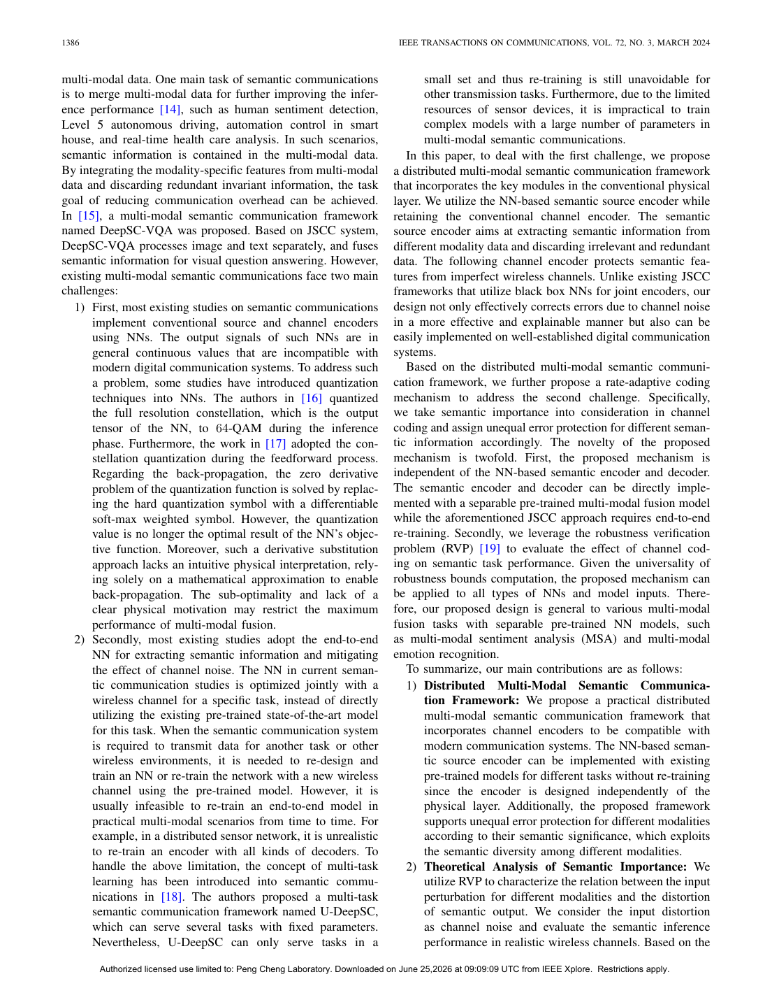
架构或方法图截图页。来源：Rate-Adaptive Coding Mechanism for Semantic Communications With Multi-Modal Data。 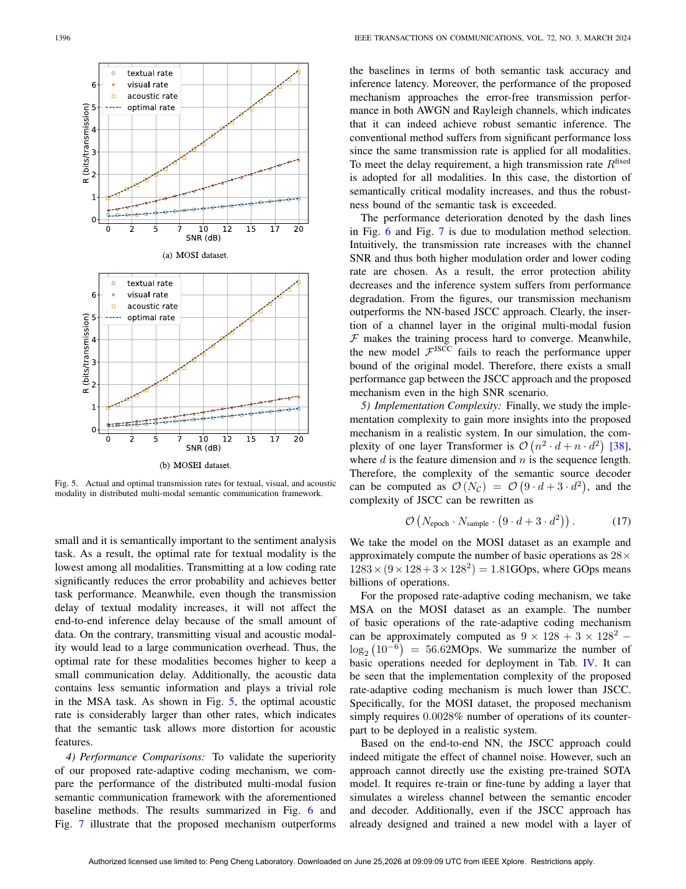
关键结果图/表截图页。来源：Rate-Adaptive Coding Mechanism for Semantic Communications With Multi-Modal Data。
SCAN: Semantic Communication With Adaptive Channel Feedback
2024 模拟式 MIMO SemCom 核心
基本信息 Zhenzi Zhang, Mingzhe Chen, Walid Saad, Merouane Debbah, Chau Yuen。IEEE Transactions on Cognitive Communications and Networking, 2024。来源：IEEE / arXiv；标识：arXiv:2306.15534; DOI 10.1109/TCCN.2024.3394867。外部来源 。
任务与实验 图像重建任务，baseline 包括固定 CSI feedback、DeepSC-MIMO、传统 CSI 压缩反馈；指标为 PSNR/MS-SSIM、semantic distortion outage、feedback bits/channel uses。
Introduction 讲述逻辑 MIMO 语义通信需要 CSI，但 CSI feedback 本身消耗资源。固定反馈长度无法兼顾不同图像和不同信道。SCAN 用语义失真概率指导反馈开销，让反馈也变成语义可控的一部分。
可控机制与方法细节 DeepSC-MIMO 根据 CSI/noise 编码图像；SCAN 预测不同反馈粒度下的重建质量或 outage risk，然后自适应选择反馈开销。系统目标是在语义质量约束下减少 CSI feedback。
不固定传输符号的具体方式 可控轴： 每幅图像的 channel feedback overhead控制信号： 预测重建质量、semantic distortion outage probability、CSI/noise符号/码率灵活性： 不是所有样本都反馈同样长度 CSI；预测质量差或语义失真风险高时分配更长反馈，质量易满足时减少反馈。
信道处理 MIMO fading 信道。控制对象是 CSI feedback 链路；语义 payload 仍为连续 DeepJSCC latent。
主要结果 在相同失真 outage 目标下减少反馈开销，并对难传图像保留更多 CSI 信息。
为何不是纯优化式论文 包含语义质量预测与 adaptive feedback 机制，不只是抽象优化模型。
局限性与 Codex 判断 它控制的是反馈侧而非主语义 payload；如果只关心发送语义符号数，它是旁路但重要的 controllable SemCom。
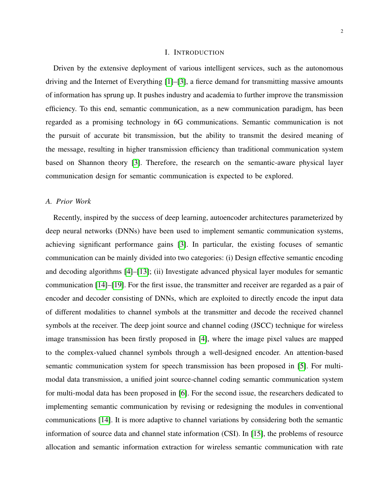
架构或方法图截图页。来源：SCAN: Semantic Communication With Adaptive Channel Feedback。 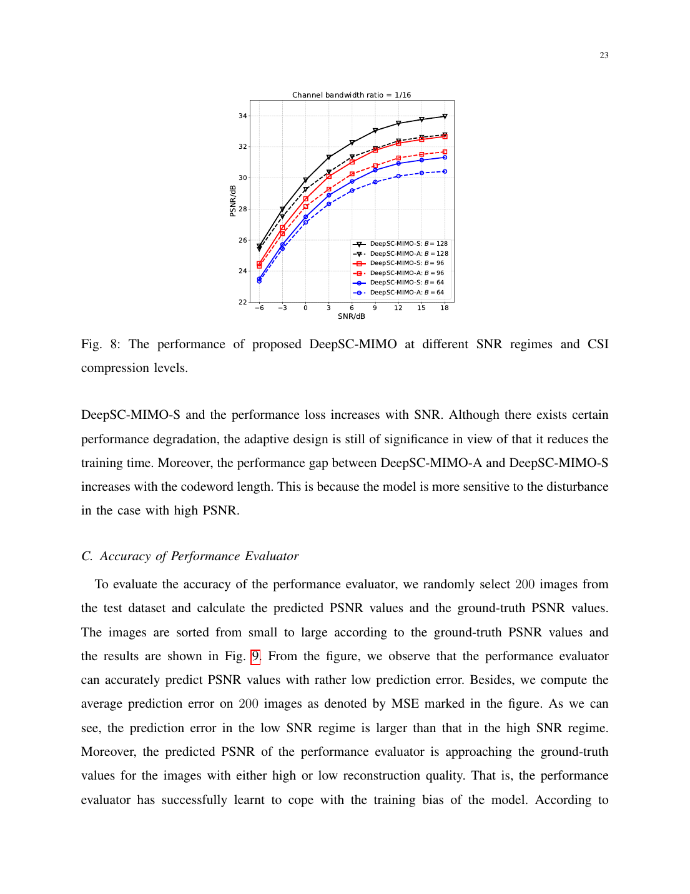
关键结果图/表截图页。来源：SCAN: Semantic Communication With Adaptive Channel Feedback。
Conditional Entropy-Constrained Multi-Stage Vector Quantization for Semantic Communication
2025 数字式 entropy-constrained MSVQ 核心
基本信息 Junyong Shin, Jihun Park, Jinsung Park, Yo-Seb Jeon。IEEE Wireless Communications Letters, 2025/2026。来源：IEEE；标识：IEEE 11299506。外部来源 。
任务与实验 图像重建数据集；baseline 包括 MSVQ、single VQ、传统编码和 fixed-rate digital SemCom；指标为 PSNR/MS-SSIM 与 entropy rate。
Introduction 讲述逻辑 MSVQ 支持渐进码率，但如果每个 index 等长发送，仍浪费统计冗余。本文把条件熵约束纳入多级 VQ，使数字语义 payload 能按概率模型自适应压缩。
可控机制与方法细节 每级 VQ 量化上一阶段残差；条件熵模型估计当前 stage index 在已发送 stage 条件下的概率，并用于 entropy coding 和 rate-distortion 训练。可按预算选择 stage 或码长。
不固定传输符号的具体方式 可控轴： 条件熵约束下的 stage-wise VQ 与 entropy-coded payload控制信号： 条件概率模型、stage residual、目标 entropy/rate符号/码率灵活性： 发送的 stage 数量和每级 index 的平均码长可按目标 rate 调整。
信道处理 主要是数字源编码侧；信道错误若存在通常由可靠传输假设或 channel coding 承担。
主要结果 同等语义质量下减少平均 bit 数，且多 stage 提供自然的 rate scalability。
为何不是纯优化式论文 控制由条件熵模型与多级 VQ 共同实现。
局限性与 Codex 判断 没有充分解决 entropy-coded index bit error 后同步失效问题；真实无线链路需强纠错。
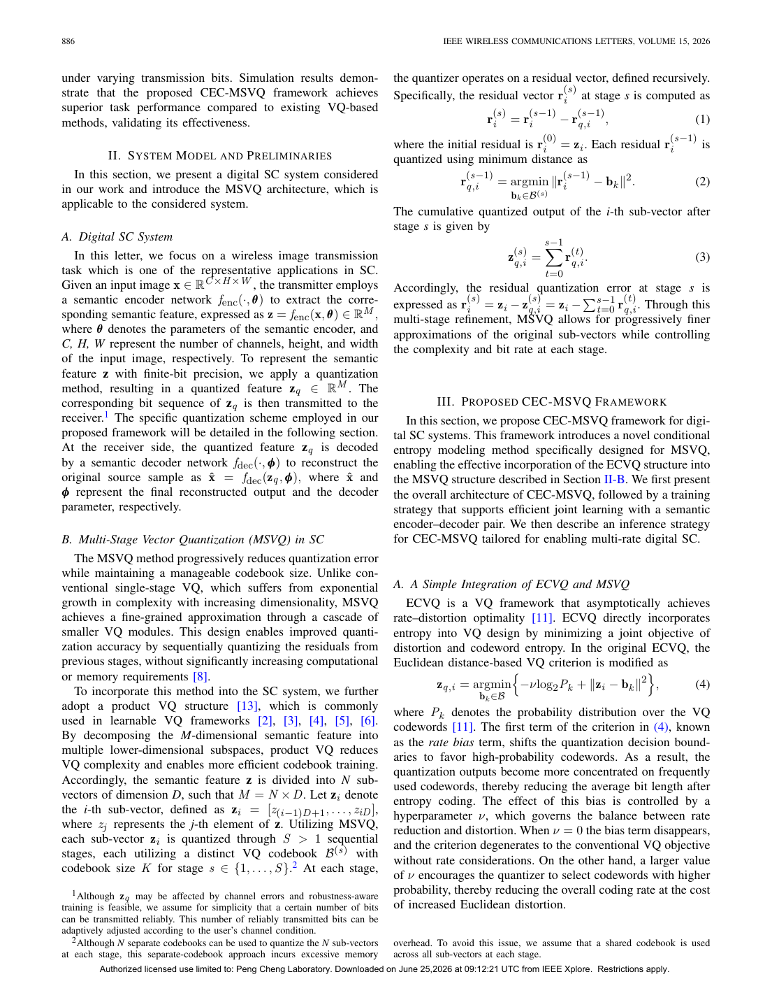
架构或方法图截图页。来源：Conditional Entropy-Constrained Multi-Stage Vector Quantization for Semantic Communication。 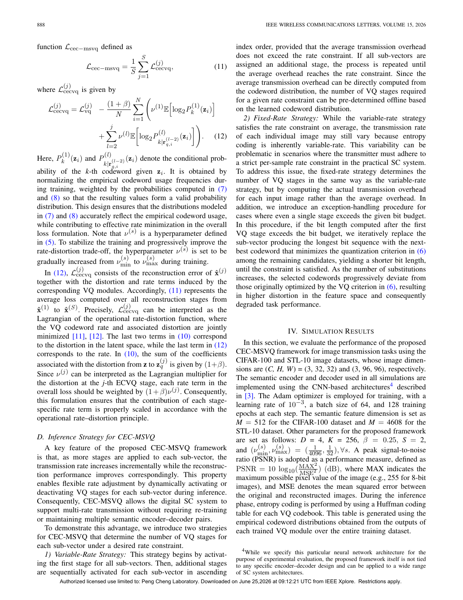
关键结果图/表截图页。来源：Conditional Entropy-Constrained Multi-Stage Vector Quantization for Semantic Communication。
DD-JSCC: Dynamic Deep Joint Source-Channel Coding for Semantic Communications
2025 模拟式 dynamic DeepJSCC 相关核心
基本信息 Rahul Raha, Soumya Adhikary, et al.。IEEE Wireless Communications Letters, 2026; arXiv preprint in 2025。来源：IEEE / arXiv；标识：arXiv:2507.20467。外部来源 。
任务与实验 无线图像重建，baseline 为 DeepJSCC、SNR-adaptive DeepJSCC 等；指标为 PSNR、MS-SSIM。
Introduction 讲述逻辑 固定 DeepJSCC 在训练 SNR 与部署 SNR 不一致时性能下降。DD-JSCC 试图让编码/解码链路随信道变化动态调整，以增强语义重建鲁棒性。
可控机制与方法细节 以 DeepJSCC 为基础加入动态模块，根据信道条件调整编码或解码路径，并在接收端强化均衡/语义解码。
不固定传输符号的具体方式 可控轴： 动态网络/动态传输路径以适配异构 SNR控制信号： 信道 SNR、编码器效率、接收端均衡/解码状态符号/码率灵活性： 强调 heterogeneous SNR 下 encoder 与 receiver-side equalization 的动态配合；payload 控制证据弱于 PADC/entropy-aware 系列。
信道处理 连续信道，重点是 heterogenous SNR 条件下的鲁棒解码。
主要结果 在变化 SNR 下相对固定 DeepJSCC 提升 PSNR/MS-SSIM。
为何不是纯优化式论文 方法包含动态 JSCC 架构，不是系统级优化。
局限性与 Codex 判断 从可控语义传输角度看，它更像鲁棒/动态网络，而不是明确的 variable-symbol coding；纳入为相关核心。
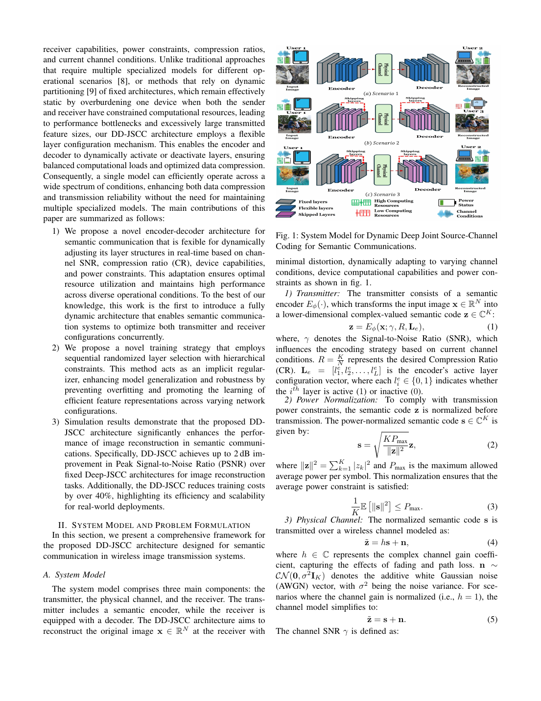
架构或方法图截图页。来源：DD-JSCC: Dynamic Deep Joint Source-Channel Coding for Semantic Communications。 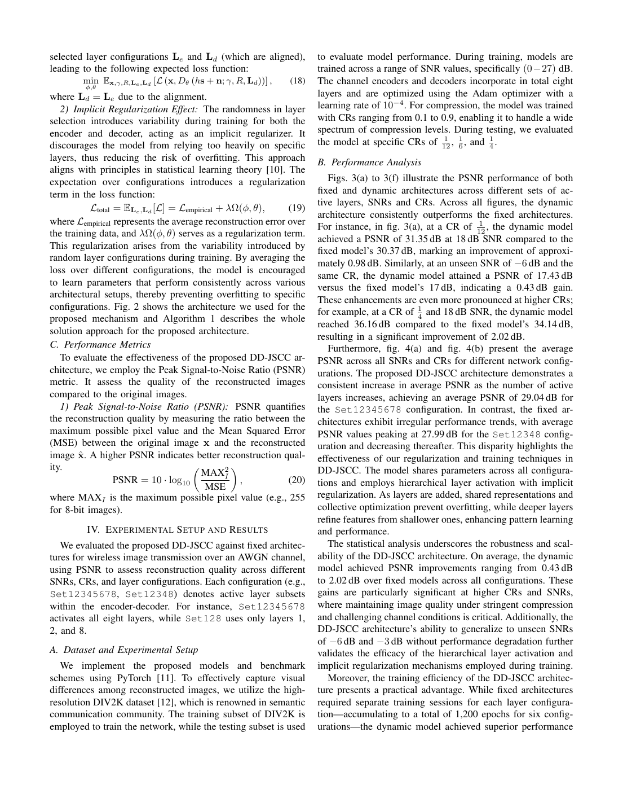
关键结果图/表截图页。来源：DD-JSCC: Dynamic Deep Joint Source-Channel Coding for Semantic Communications。
Digital Semantic Communications With Variable Product Quantization for Image Transmission
2025 数字式 VPQ SemCom 核心
基本信息 Junxiao Liang, Fengyu Wang, Yuan Zheng, Wenjun Xu, Xiaodong Xu, Jincheng Dai。IEEE WCNC, 2025。来源：IEEE；标识：DOI 10.1109/WCNC61545.2025.10978348。外部来源 。
任务与实验 图像传输数据集；baseline 包括 VQ semantic communication、传统压缩、模拟 DeepJSCC 等；指标包括 PSNR/MS-SSIM 和传输 bits/CBR。
Introduction 讲述逻辑 固定 VQ codebook 很难在不同带宽下保持效率；PQ 将 latent 分解到多个子空间，天然支持按子空间组合调整传输量。本文将 variable product quantization 用于数字 SemCom 图像传输。
可控机制与方法细节 语义 encoder 输出 feature map 后分块或分通道进入 PQ；每个子向量从对应 codebook 选择 index。VPQ 根据目标 rate 或条件选择使用多少子码本/子向量，从而生成可变 bitstream。
不固定传输符号的具体方式 可控轴： product quantization 子空间/码本数量可变控制信号： 目标码率、图像 latent 结构、PQ codebooks符号/码率灵活性： 通过改变启用的 product codebook / 子向量组合，生成不同长度的离散 index 序列。
信道处理 离散 index 通常通过数字链路传输，信道错误主要交给传统信道编码；论文重点是可变 PQ 源编码。
主要结果 在多码率下比固定 VQ/PQ 更灵活，低码率可保持较好语义质量。
为何不是纯优化式论文 控制点是 VPQ 量化结构和 codebook 使用方式。
局限性与 Codex 判断 子 index 一旦误判会映射到不同 codeword；若没有 joint channel-aware index assignment，语义跳变仍是风险。
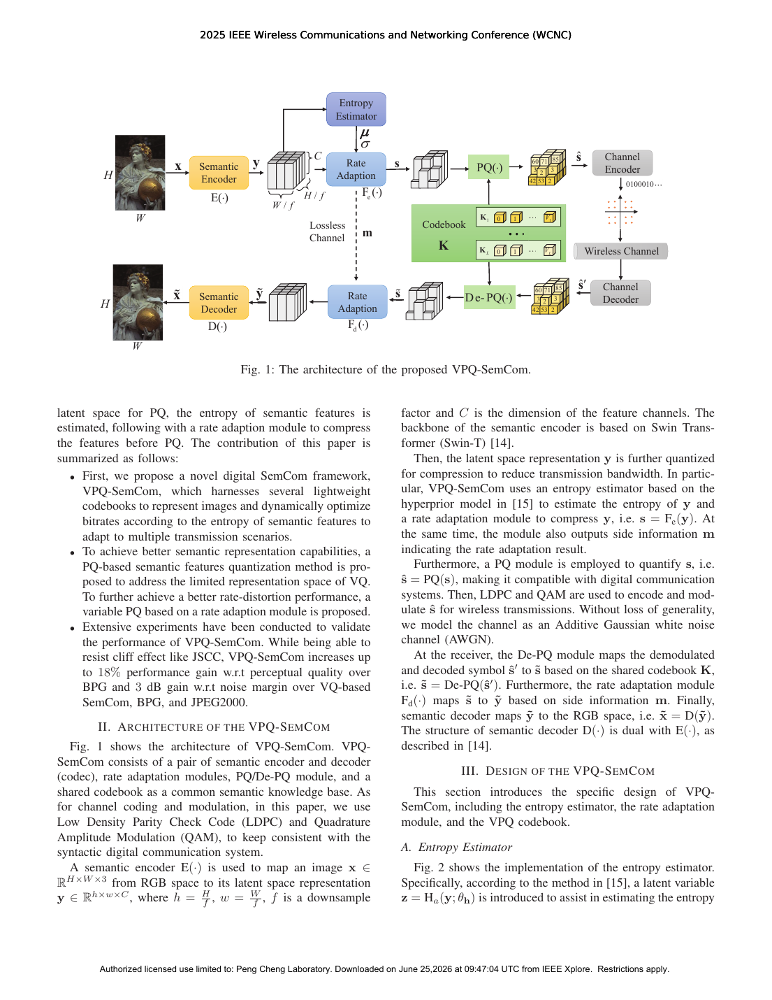
架构或方法图截图页。来源：Digital Semantic Communications With Variable Product Quantization for Image Transmission。 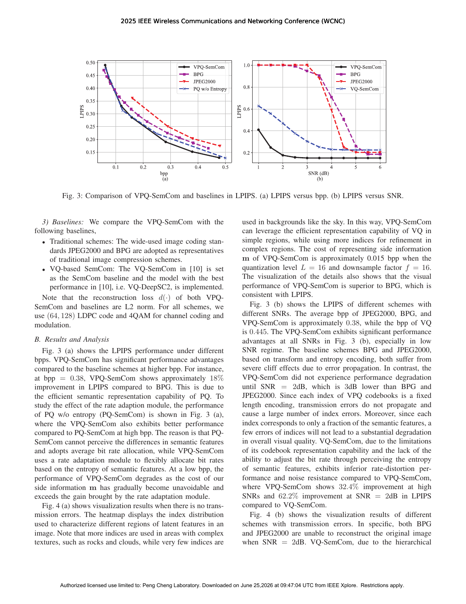
关键结果图/表截图页。来源：Digital Semantic Communications With Variable Product Quantization for Image Transmission。
Digital-SC: Digital Semantic Communication With Adaptive Network Split and Learned Non-Linear Quantization
2025 数字式 split-computing SemCom 核心
基本信息 Lei Guo, Wei Chen, Yuxuan Sun, Bo Ai。IEEE Transactions on Cognitive Communications and Networking, 2025。来源：IEEE；标识：DOI 10.1109/TCCN.2024.3510586; IEEE 10772628。外部来源 。
任务与实验 CIFAR-10、Mini-ImageNet 等分类任务；baseline 包括本地/云端推理、固定 split、线性量化、无剪枝方案；指标为 accuracy、传输 bits、BER 下精度。
Introduction 讲述逻辑 边缘语义通信不是一定要传原图，也不一定固定在某个网络层传中间特征。不同设备能力、链路误码和任务精度要求会改变最佳 split/quantization。Digital-SC 把 split 与 learned quantization 联合设计。
可控机制与方法细节 客户端运行 DNN 前几层得到 intermediate features；adaptive network split 选择上传层；structured pruning 减少通道；learned nonlinear quantization 将长尾特征映射为 bit sequence；服务器 dequantize 后完成剩余任务。
不固定传输符号的具体方式 可控轴： 网络切分点、特征通道剪枝、非线性量化 bit-depth控制信号： 设备/边缘算力、BER、任务精度需求、feature statistics符号/码率灵活性： 可在不同层切分并对中间特征使用不同剪枝和量化配置；实际发送的中间特征大小可变。
信道处理 数字 bitstream 通过 QAM/BER 模型；decoder 收到可能有误 bit 后 dequantize。论文测试 BER 对任务性能的影响，但主要依赖量化/剪枝/semantic learning 提升鲁棒性。
主要结果 在相近精度下降下显著降低传输开销，且自适应 split 比固定层更适合不同链路。
为何不是纯优化式论文 可控性来自 DNN split、pruning 和 learned quantization 结构。
局限性与 Codex 判断 网络 split 决策与实际无线调度、时延和能耗耦合较强；bit error 的语义感知纠错仍有限。
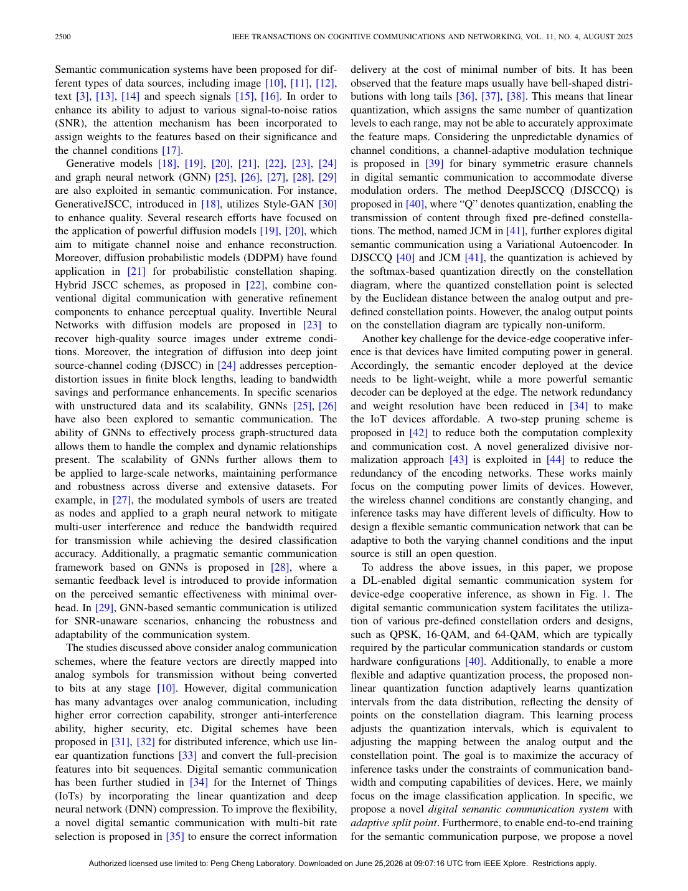
架构或方法图截图页。来源：Digital-SC: Digital Semantic Communication With Adaptive Network Split and Learned Non-Linear Quantization。 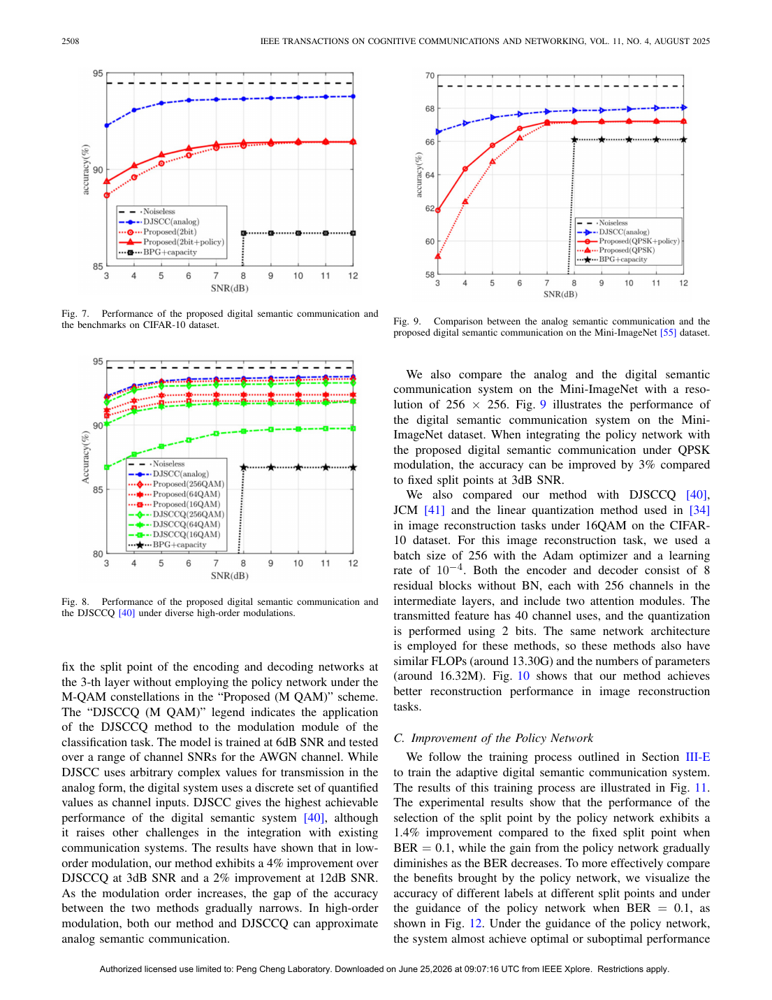
关键结果图/表截图页。来源：Digital-SC: Digital Semantic Communication With Adaptive Network Split and Learned Non-Linear Quantization。
Entropy-and-Channel-Aware Adaptive-Rate Semantic Communication With MLLM-Aided Feature Compensation
2025 模拟式 MIMO adaptive-rate SemCom 核心
基本信息 Weixuan Chen, Qianqian Yang, Yuhao Chen, Chongwen Huang, Qian Wang, Zehui Xiong, Zhaoyang Zhang。arXiv preprint, 2025。来源：arXiv；标识：arXiv:2501.15414。外部来源 。
任务与实验 CIFAR-10 图像；MIMO Rayleigh fading，Nt=Nr=2 或 4；CU=24/36 时最大 CR 分别约 0.25/0.375；baseline 为 BPG+LDPC 和 SwinJSCC+SA&RA；指标为 PSNR 与平均 CR。
Introduction 讲述逻辑 论文指出 fixed-rate SemCom 在好信道浪费资源、坏信道质量下降；已有 adaptive-rate 方法常只依据 SNR 或少数离散 CR，粒度粗，且丢弃特征后缺少显式补偿。作者提出 entropy-and-channel-aware 控制，并用 MLLM/InternViT 辅助补偿被丢弃或受损特征。
可控机制与方法细节 语义 encoder 输出 feature maps Z1；CSI 与 SNR 经 embedding 后注入 encoder/decoder。Policy Network 1 读取 Z1、2D entropy 与 channel embedding，选择重要 feature maps；Policy Network 2 进一步决定 retained feature maps 内的 symbol cut-off。发送端只传被选择/裁剪后的 Z3，接收端经 MIMO Rayleigh 信道、L-MMSE 检测与 InternViT/LoRA feature compensation 恢复缺失结构。
不固定传输符号的具体方式 可控轴： feature map selection + symbol pruning 的双层 rate control控制信号： CSI、SNR、feature maps、每个 feature map 的 2D entropy符号/码率灵活性： 两级 policy network 同时决定保留哪些 feature maps 和每个样本内保留多少 symbols，CR 可在给定上限范围内连续变化。
信道处理 显式 MIMO Rayleigh + AWGN。decoder 接收带噪且被裁剪的连续特征；信道估计 CSI/SNR 被反馈到发送端，并作为控制输入。
主要结果 相同或更低 CR 下比 SwinJSCC+SA&RA 高约 0.4-0.9 dB PSNR；中高 SNR 下相对 BPG+LDPC 可有约 1.5-2 dB 增益。ViT 补偿模块能在少发 11%-18% symbols 时保持接近 PSNR。
为何不是纯优化式论文 控制由两个 policy network、entropy feature 和 MLLM 补偿端到端实现，不是单独的 rate allocation 优化。
局限性与 Codex 判断 MLLM/InternViT 补偿带来模型规模和部署成本；论文把 mask/cut-off side information 开销简化为很小，实际链路仍需协议验证。
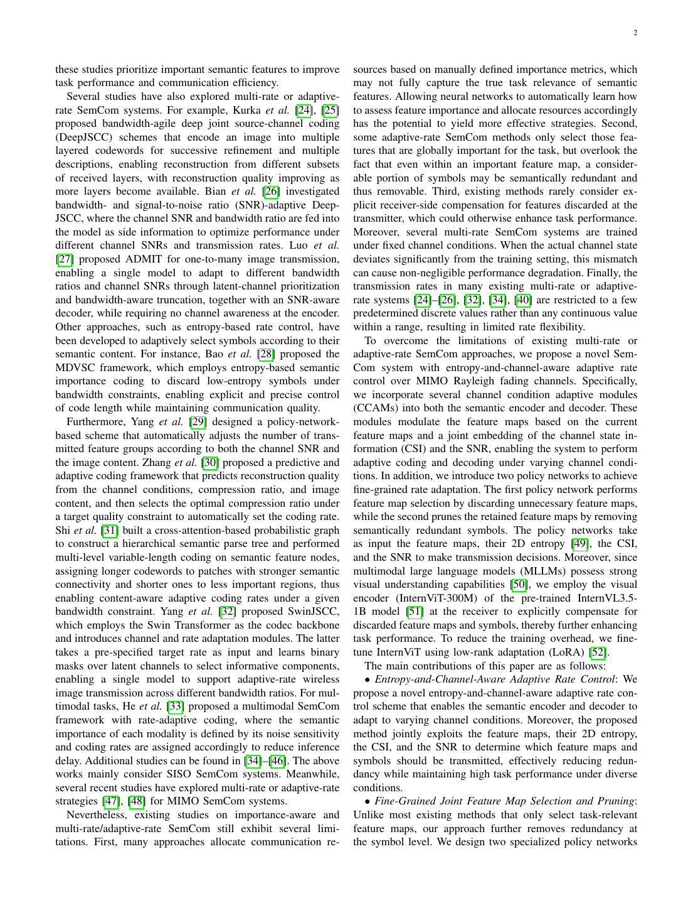
架构或方法图截图页。来源：Entropy-and-Channel-Aware Adaptive-Rate Semantic Communication With MLLM-Aided Feature Compensation。 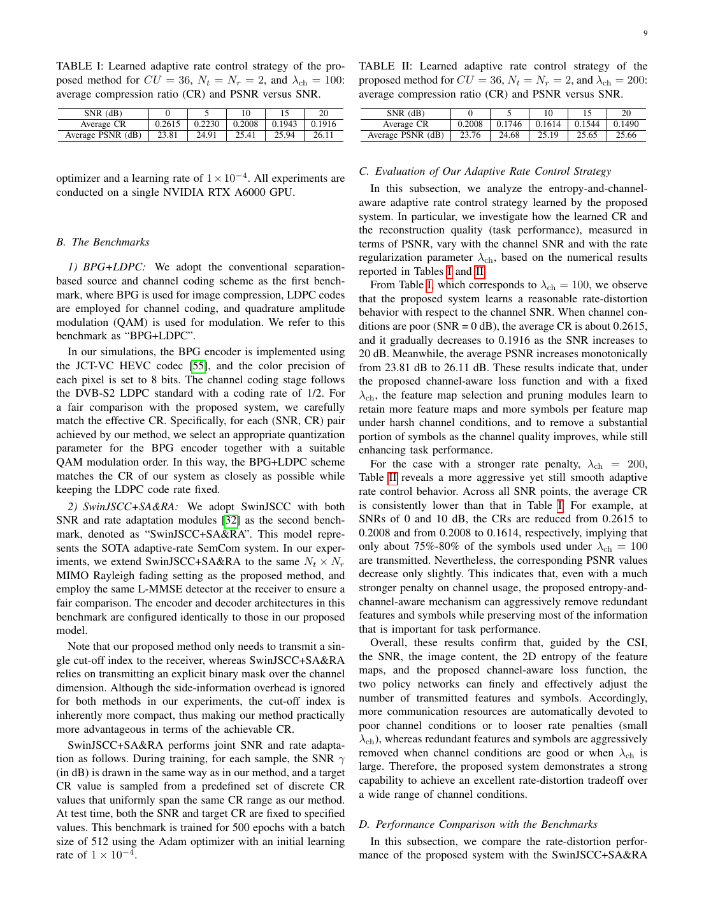
关键结果图/表截图页。来源：Entropy-and-Channel-Aware Adaptive-Rate Semantic Communication With MLLM-Aided Feature Compensation。
Fully Learnable Multi-Rate Quantization for Digital Semantic Communication Systems
2025 数字式 learnable multi-rate quantization 核心
基本信息 Minhoe Kim, Dong Jin Ji。IEEE Wireless Communications Letters, 2025。来源：IEEE；标识：DOI 10.1109/LWC.2025.3581374。外部来源 。
任务与实验 图像传输；baseline 包括固定 bit-depth 量化、VQ/PQ、模拟 DeepJSCC；指标为重建质量与 bit rate。
Introduction 讲述逻辑 数字 SemCom 需要离散 bit，但传统量化器不可导且固定 rate。论文用可学习多码率量化解决训练和部署中的 rate 切换问题。
可控机制与方法细节 将量化决策建模为可学习的 categorical/concrete 随机变量，训练时用连续松弛反传，测试时输出离散 index/bit。多 rate 分支或共享量化参数让同一 semantic encoder 支持不同 bits per feature。
不固定传输符号的具体方式 可控轴： learnable quantization levels / multi-rate bitstream控制信号： 目标 rate、Concrete categorical variables、训练中的离散化松弛符号/码率灵活性： 同一量化模型生成不同 bit-depth/rate 的离散表示，避免为每个 rate 单独训练量化器。
信道处理 数字 bitstream 可接传统 channel coding；部分实验显式考虑 BER 或离散错误。decoder 接收量化后的数字表示。
主要结果 多 rate 下比固定量化器更平滑，降低多模型维护成本。
为何不是纯优化式论文 可控性来自 learnable quantizer 本身。
局限性与 Codex 判断 Concrete 松弛和真实硬判决之间仍可能有 gap；强信道错误下 index 语义距离未必被优化。
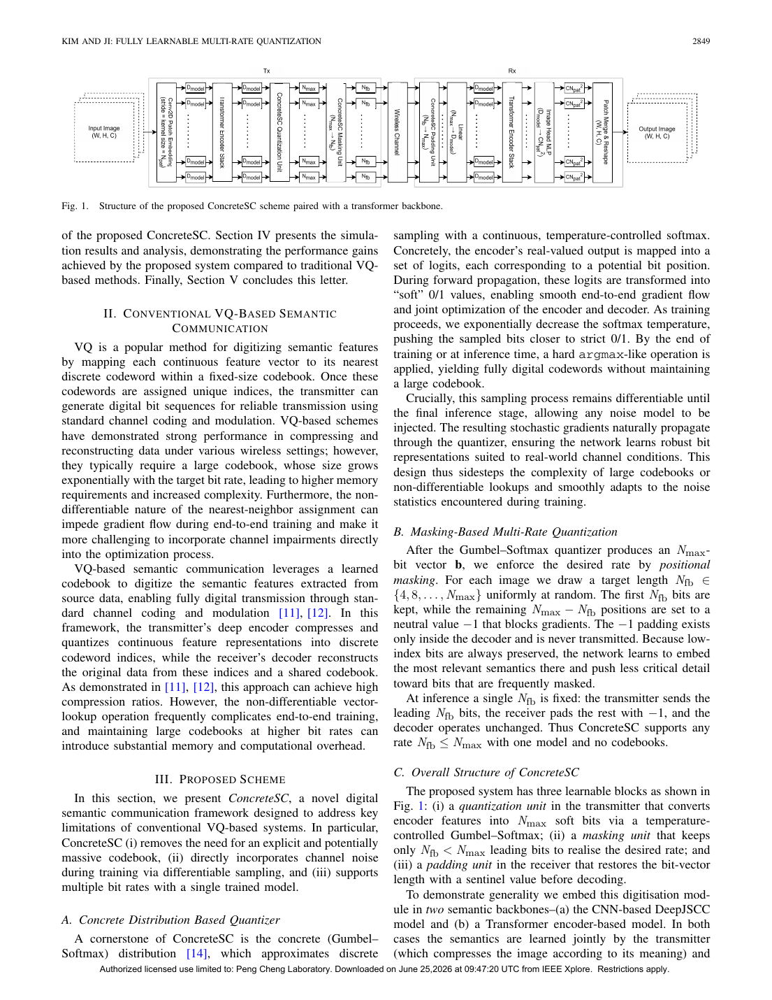
架构或方法图截图页。来源：Fully Learnable Multi-Rate Quantization for Digital Semantic Communication Systems。 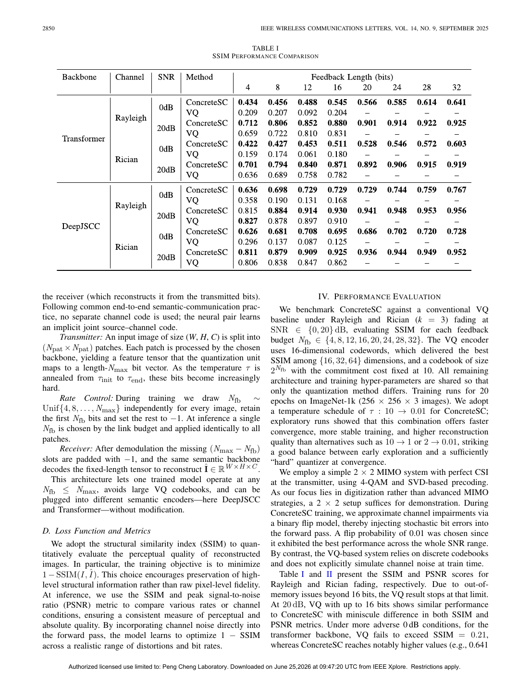
关键结果图/表截图页。来源：Fully Learnable Multi-Rate Quantization for Digital Semantic Communication Systems。
Hybrid Digital-Analog Semantic Communications
2025 混合数字-模拟 SemCom 核心
基本信息 Huiqiang Xie, Zhijin Qin, Xiaoming Tao, et al.。IEEE Journal on Selected Areas in Communications, 2025。来源：IEEE / arXiv；标识：arXiv:2405.12580; DOI 10.1109/JSAC.2025.3559149。外部来源 。
任务与实验 图像语义传输实验；baseline 包括 analog DeepJSCC、digital semantic coding、BPG/LDPC 等；指标为 PSNR/MS-SSIM/LPIPS 和 rate。
Introduction 讲述逻辑 纯模拟 DeepJSCC 对信道鲁棒但难兼容现有数字网络；纯数字语义编码可部署但存在误码 cliff。HDA-DeepSC 试图结合二者：关键语义可数字保护，残差信息可模拟平滑退化。
可控机制与方法细节 编码器分成 digital branch 与 analog branch，allocation/fusion modules 决定哪些语义信息进入 bitstream，哪些以连续符号发送。训练使用 rate/distortion loss 约束两条支路的协同。
不固定传输符号的具体方式 可控轴： digital stream 与 analog stream 的分配和融合控制信号： rate/distortion loss、信道状态、语义特征重要性符号/码率灵活性： 系统可在数字 bitstream 和模拟 semantic latent 之间调整承载比例；不是固定只走 analog 或 digital。
信道处理 同时考虑数字链路误码/译码和模拟链路噪声。decoder 融合数字恢复特征与带噪模拟特征。
主要结果 在不同信道下比单一路径更平滑，兼顾数字可靠性和模拟 graceful degradation。
为何不是纯优化式论文 核心是 HDA 编码结构和融合网络，而不是单纯分配传输量。
局限性与 Codex 判断 分配策略和协议实现复杂；数字侧若出现不可纠正 bit errors，仍需更细的语义错误建模。
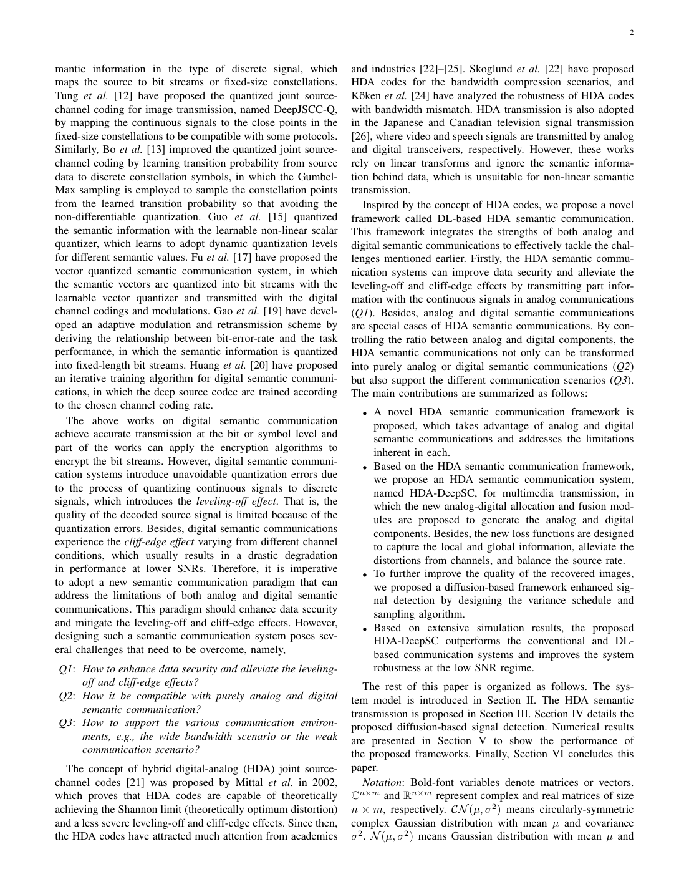
架构或方法图截图页。来源：Hybrid Digital-Analog Semantic Communications。 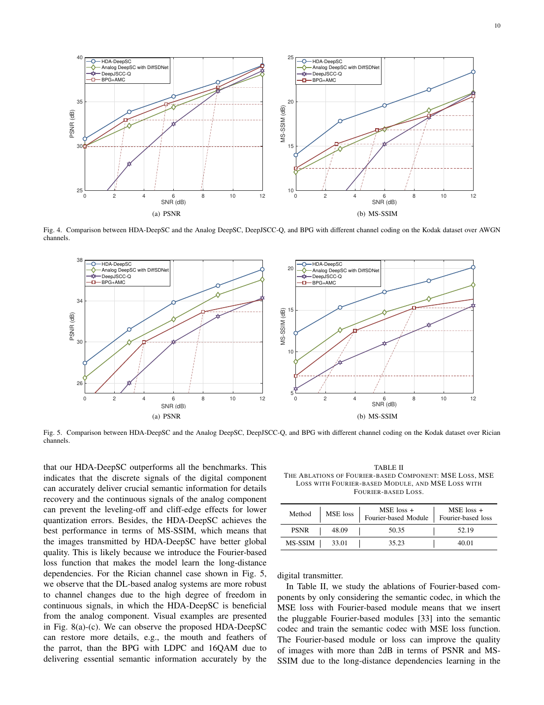
关键结果图/表截图页。来源：Hybrid Digital-Analog Semantic Communications。
Joint Source-Channel Coding for Channel-Adaptive Digital Semantic Communications
2025 数字式 channel-adaptive DSC 核心
基本信息 Joohyuk Park, Yongjeong Oh, Seonjung Kim, Yo-Seb Jeon。IEEE Transactions on Cognitive Communications and Networking, 2025。来源：IEEE；标识：DOI 10.1109/TCCN.2024.3422496。外部来源 。
任务与实验 图像分类、重建和检索任务；baseline 包括 fixed digital SemCom、传统 JSCC/DeepJSCC、分离压缩编码；指标为 accuracy、PSNR/MS-SSIM、retrieval metrics 与 BER/erasure 条件。
Introduction 讲述逻辑 数字 SemCom 若简单把语义特征量化成 bits，再交给传统 channel coding，会忽略 bit error 对语义特征的非均匀影响。该论文尝试把离散信道条件纳入 JSCC 训练。
可控机制与方法细节 语义 encoder 产生数字表示，经离散信道模型或 soft-erasure representation 传输；decoder/任务头直接面向受损 digital semantic variables 训练。不同信道条件下模型可调节表示冗余和鲁棒性。
不固定传输符号的具体方式 可控轴： 离散信道条件下的 channel-adaptive source-channel representation控制信号： 信道 error/erasure probability、semantic feature、任务 loss符号/码率灵活性： 数字语义表示根据离散信道状态训练/适配；可在不同 error 条件下改变编码保护或 soft representation。
信道处理 显式建模离散信道错误，decoder 可接收 bit/soft-erasure 后的表示；相比只假设无误 index，它更接近真正数字语义链路。
主要结果 在高 BER/erasure 下优于未进行 channel-adaptive 训练的数字语义系统。
为何不是纯优化式论文 关键是端到端 channel-adaptive digital JSCC 表示学习。
局限性与 Codex 判断 具体适配到实际 LDPC/QAM/软信息接口仍需工程化；不同任务共享同一数字表示的泛化有待验证。
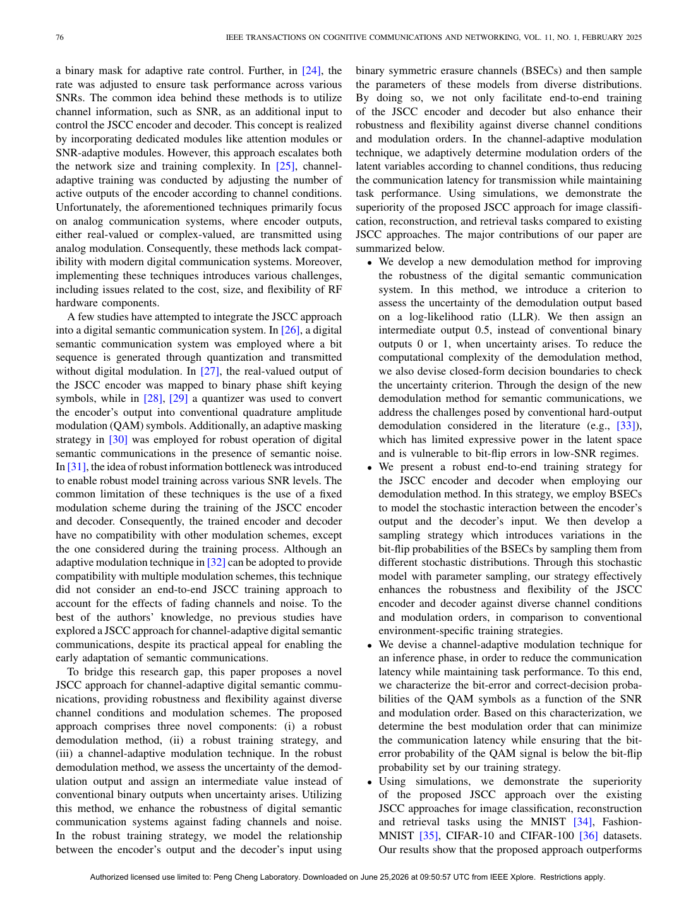
架构或方法图截图页。来源：Joint Source-Channel Coding for Channel-Adaptive Digital Semantic Communications。 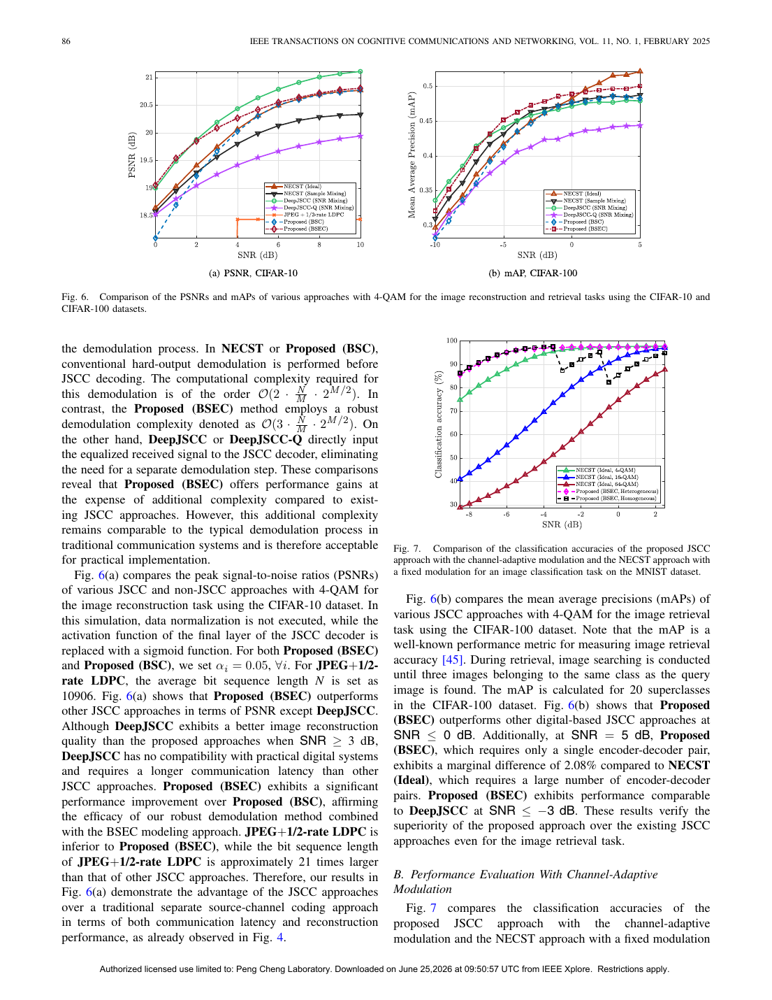
关键结果图/表截图页。来源：Joint Source-Channel Coding for Channel-Adaptive Digital Semantic Communications。
Progressive Learned Image Transmission for Semantic Communication Using Hierarchical VAE
2025 生成式/渐进式 SemCom 核心
基本信息 Wenhao Zhang, et al.。IEEE Transactions on Cognitive Communications and Networking, 2025。来源：IEEE / arXiv；标识：arXiv:2408.16340; DOI 10.1109/TCCN.2025.3546935。外部来源 。
任务与实验 图像数据集；baseline 包括一次性 DeepJSCC/NTSCC、传统 progressive codec、BPG+LDPC；指标为每阶段 PSNR/MS-SSIM/LPIPS、rate-progress curve。
Introduction 讲述逻辑 固定一次性传输不适合带宽波动和逐步预览场景。层级 VAE 天然有从全局语义到局部细节的分层结构，适合做 progressive semantic communication。
可控机制与方法细节 Hierarchical VAE 产生多层 latent 表示；底层/全局 latent 先传，高层/细节 latent 后传。空间 grouping 和 rate matching 控制每一步的发送量，decoder 每收到一层即可更新重建。
不固定传输符号的具体方式 可控轴： 层级 latent groups 的 coarse-to-fine progressive transmission控制信号： 层级 VAE latent、目标质量、可用带宽/信道条件符号/码率灵活性： 可先发送粗层语义 latent，再按需要发送细层 latent；传输可以随时停止或继续增强。
信道处理 有噪连续信道下逐层传输 latent；未收到的层由 VAE prior/decoder 预测。
主要结果 同一传输可在低 rate 下给出可用预览，并随追加层逐步提升质量。
为何不是纯优化式论文 渐进性来自层级 VAE 语义表示和可停止传输结构。
局限性与 Codex 判断 层级 latent 的最优发送顺序和误码保护仍有空间；若早期 coarse latent 出错，后续细节可能被带偏。
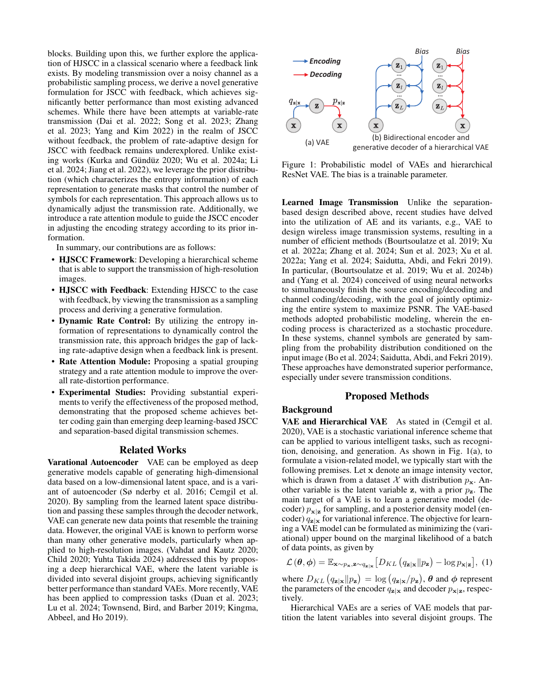
架构或方法图截图页。来源：Progressive Learned Image Transmission for Semantic Communication Using Hierarchical VAE。 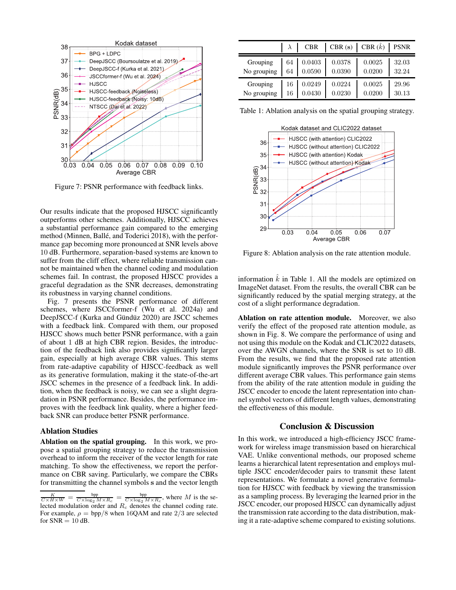
关键结果图/表截图页。来源：Progressive Learned Image Transmission for Semantic Communication Using Hierarchical VAE。
Rate-Adaptive Generative Semantic Communication Using Conditional Diffusion Models
2025 生成式 rate-adaptive SemCom 核心
基本信息 Ke Yang, Jincheng Dai, Sixian Wang, Kailin Tan, Kai Niu, Ping Zhang。IEEE Wireless Communications Letters, 2025。来源：IEEE / arXiv；标识：arXiv:2409.02597; DOI 10.1109/LWC.2024.3515656。外部来源 。
任务与实验 图像数据集；baseline 包括 DeepJSCC、NTSCC、WITT、生成式压缩/扩散方案；指标为 PSNR、MS-SSIM、LPIPS、FID 与平均 rate。
Introduction 讲述逻辑 低码率下普通 JSCC 重建模糊，生成式模型可补细节，但如果传输率不可控则难以落地。论文结合 rate-adaptive entropy model 和 conditional diffusion decoder，让传输量可变而图像质量保持。
可控机制与方法细节 编码器产生语义 latent/symbol，entropy model 评估其传输代价并控制保留量；接收端以收到的语义信息作为 diffusion 条件，逐步生成或恢复图像。训练兼顾重建失真、感知质量和 rate。
不固定传输符号的具体方式 可控轴： 熵模型估计 transmitted symbols 的信息量并管理带宽控制信号： symbol entropy、target rate、信道条件、diffusion conditioning符号/码率灵活性： 根据语义 symbol 的熵和目标带宽选择发送量，decoder 用条件扩散模型补全细节。
信道处理 连续或符号化 latent 经有噪信道；扩散 decoder 处理不完整/带噪条件。
主要结果 在较低或可变 rate 下提高感知质量，同时保持可控带宽。
为何不是纯优化式论文 rate control 与 diffusion conditional decoder 共同构成通信方法。
局限性与 Codex 判断 扩散推理成本高，且低语义条件下可能引入非真实细节。
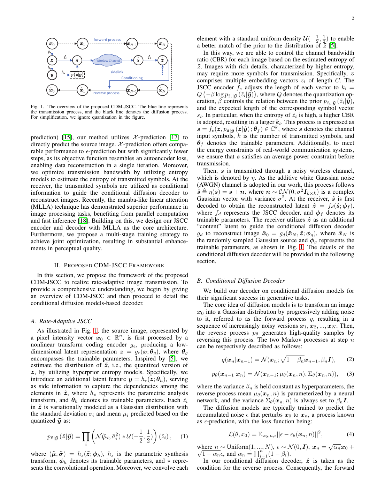
架构或方法图截图页。来源：Rate-Adaptive Generative Semantic Communication Using Conditional Diffusion Models。 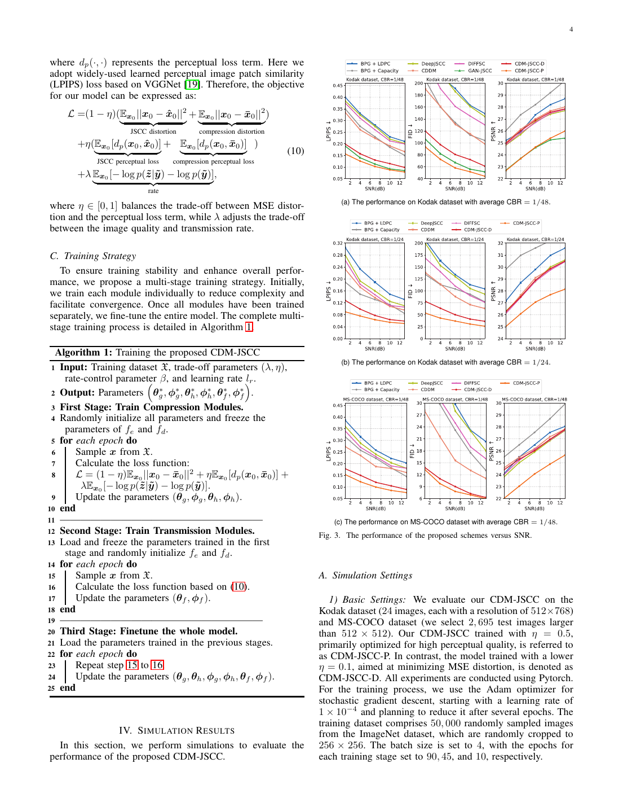
关键结果图/表截图页。来源：Rate-Adaptive Generative Semantic Communication Using Conditional Diffusion Models。
Rate-Adaptive Semantic Communication via Multi-Stage Vector Quantization
2025 数字式 MSVQ SemCom 核心
基本信息 Jinsung Park, Junyong Shin, Yongjeong Oh, Jihun Park, Yo-Seb Jeon。arXiv preprint, 2025。来源：arXiv；标识：arXiv:2510.02646。外部来源 。
任务与实验 图像重建数据集；baseline 包括 single-stage VQ、固定率数字 SemCom、传统压缩+信道编码；指标为 PSNR/MS-SSIM/LPIPS 与 bits per pixel / CBR。
Introduction 讲述逻辑 单级 VQ 或固定码率数字 SemCom 难以兼顾低码率和高质量。MSVQ 将语义 latent 的残差逐级量化，使系统可以按预算逐步发送更多 index。
可控机制与方法细节 encoder 得到连续 semantic latent；stage 1 codebook 量化主信息，后续 codebooks 量化残差。发送端可根据预算停止在第 k 级，并用 entropy coding 压缩 index。decoder 把收到的多个 stage codewords 相加或融合恢复 latent。
不固定传输符号的具体方式 可控轴： 按 rate 激活不同数量的 VQ stages / codebooks控制信号： bit budget、stage-wise residual energy/semantic utility、entropy coding符号/码率灵活性： 低码率只发前几级 coarse VQ index，高码率追加 residual stages；离散 payload 长度天然可变。
信道处理 主要关注数字 VQ index payload；信道错误处理较弱，通常依赖可靠数字链路或传统 channel coding。
主要结果 多 stage 结构提供平滑 rate-quality 曲线，一个模型覆盖多个 rate。
为何不是纯优化式论文 可控性来自 multi-stage codebook 架构，不是外层分配模型。
局限性与 Codex 判断 如果后续 residual index 出错，误差如何传播到语义 latent 仍需更细的信道联合训练。
架构或方法图截图页。来源：Rate-Adaptive Semantic Communication via Multi-Stage Vector Quantization。 关键结果图/表截图页。来源：Rate-Adaptive Semantic Communication via Multi-Stage Vector Quantization。
Rate-Distortion-Perception Controllable Joint Source-Channel Coding for High-Fidelity Generative Semantic Communications
2025 生成式模拟 JSCC 核心
基本信息 Kailin Tan, Jincheng Dai, Sixian Wang, Zhongwei Si, Kai Niu, Ping Zhang。IEEE Transactions on Cognitive Communications and Networking, 2025。来源：IEEE / arXiv；标识：arXiv:2408.14127; DOI 10.1109/TCCN.2024.3511960。外部来源 。
任务与实验 图像重建/生成式通信数据集；baseline 包括 NTSCC、WITT、生成式压缩/JSCC、BPG+LDPC；指标包括 PSNR、MS-SSIM、LPIPS、FID/KID 等感知指标。
Introduction 讲述逻辑 生成式语义通信能在低码率下产生高感知质量，但 distortion 与 perception 往往冲突；不同用户也可能关注不同区域。论文把 R-D-P 权衡和内容兴趣作为可控变量。
可控机制与方法细节 DPCT 通过 realism map 和条件控制调整生成式 JSCC 的 perception-distortion 权衡；CCT 针对用户兴趣内容进行优先传输或增强。编码器输出连续语义表示，生成式 decoder 在控制条件下恢复高保真图像。
不固定传输符号的具体方式 可控轴： rate-distortion-perception 三目标与 ROI/content 控制控制信号： RDP preference、realism map、用户兴趣/注意区域、信道条件符号/码率灵活性： 同一系统可改变传输侧对失真、感知真实度和重点内容的优先级，CCT 可把更多资源给兴趣区域。
信道处理 连续 latent 通过有噪无线信道；控制变量主要作用在 semantic/generative decoder 和传输表示上，不涉及离散 bit error。
主要结果 用户可在更高 PSNR 与更好感知质量之间调节，并能对兴趣区域获得更好重建。
为何不是纯优化式论文 可控性由生成式 JSCC 结构、realism map 和内容控制模块实现。
局限性与 Codex 判断 控制目标更偏质量/感知/内容，而不是严格的符号数自适应；生成式幻觉风险需额外约束。
架构或方法图截图页。来源：Rate-Distortion-Perception Controllable Joint Source-Channel Coding for High-Fidelity Generative Semantic Communications。 关键结果图/表截图页。来源：Rate-Distortion-Perception Controllable Joint Source-Channel Coding for High-Fidelity Generative Semantic Communications。
Semantic Codebook-Based HARQ for Wireless Image Transmission
2025 数字/混合式 semantic codebook HARQ 核心
基本信息 Gaohong Liang, Xuefei Zhang, Ji Zhang, Yao Sun, Qimei Cui, Xiaofeng Tao。IEEE Transactions on Communications, 2025。来源：IEEE；标识：IEEE 11145114; DOI 10.1109/TCOMM.2025.3604326。外部来源 。
任务与实验 DIV2K 训练、Kodak 测试等图像；baseline 包括 DJSCC、传统 II-HARQ、无 HARQ 的 SCB；指标为 PSNR、MS-SSIM、LPIPS、重传开销。
Introduction 讲述逻辑 传统 HARQ 检查 bit/CRC 正确性，但语义通信中某些 bit 错误可能不影响语义，某些语义特征错误又会严重伤害重建。SCB-HARQ 用语义码本检测 feature-level distortion。
可控机制与方法细节 发送端将图像特征映射到 semantic codebook / WSFI index-map；接收端比较收到特征与 codebook 的语义相似度，低于阈值时触发 HARQ 重传或补发 masked features。阈值和 codebook 大小控制重传开销。
不固定传输符号的具体方式 可控轴： 基于 semantic codebook 的错误检测与按需重传控制信号： received feature 与 codebook 的语义相似度、SNR、反馈 ACK/NACK符号/码率灵活性： 只有被判定语义失真的特征或必要增量被重传；高 SNR 或语义相似度足够时减少重传。
信道处理 AWGN 与 Rayleigh fading。错误以 feature distortion 形式体现，HARQ 不仅看 bit 错误，而看语义相似度。
主要结果 低 SNR 下相对 DJSCC/传统 HARQ 有明显 PSNR/MS-SSIM 改善，高 SNR 下重传需求自然减少。
为何不是纯优化式论文 核心是 semantic codebook error detection + HARQ 机制。
局限性与 Codex 判断 语义相似度阈值和 codebook 质量很关键；反馈延迟和真实 HARQ 时序未完全展开。
架构或方法图截图页。来源：Semantic Codebook-Based HARQ for Wireless Image Transmission。 关键结果图/表截图页。来源：Semantic Codebook-Based HARQ for Wireless Image Transmission。
Unequal Error Protection for Digital Semantic Communication With Channel Coding
2025 数字式 semantic-aware channel coding 边界核心
基本信息 Seonjung Kim, Yongjeong Oh, Yongjune Kim, Namyoon Lee, Yo-Seb Jeon。arXiv preprint, 2025。来源：arXiv；标识：arXiv:2508.03381。外部来源 。
任务与实验 图像传输或任务实验；baseline 包括 equal error protection、无 UEP digital SemCom、传统 LDPC/Polar 配置；指标为 PSNR/MS-SSIM/accuracy 与 BER/FER。
Introduction 讲述逻辑 数字语义通信的 bit 不是等价的：某些 bit 翻转会导致语义 feature 大幅跳变，其他 bit 影响很小。传统均等信道编码忽视这种不均匀性。
可控机制与方法细节 先估计每个数字语义 bit 的重要性或误差敏感度，再与 channel coding 结合进行 UEP。发送端将重要 bit 分配更低码率/更强纠错，接收端译码后恢复语义表示。
不固定传输符号的具体方式 可控轴： semantic bit importance 驱动的 unequal error protection控制信号： 语义 bit sensitivity、channel code rate/protection level、信道条件符号/码率灵活性： 不同 bit 或 bit groups 使用不同保护强度；重要语义 bit 获得更多冗余，不重要 bit 可少保护。
信道处理 显式考虑 channel coding 后残余 bit error；decoder 收到经译码的 bitstream。它直接针对 bit error 对语义质量的不均匀影响。
主要结果 相同总体冗余下，UEP 比均等保护更能维持语义质量，尤其在低 SNR/高 BER 下。
为何不是纯优化式论文 虽然涉及保护资源分配，但输入是 semantic bit importance，输出是 channel coding 方案，属于语义感知链路方法。
局限性与 Codex 判断 若重要性估计与真实任务不匹配，冗余可能放错位置；复杂调制链路中的软信息利用仍可加强。
架构或方法图截图页。来源：Unequal Error Protection for Digital Semantic Communication With Channel Coding。 关键结果图/表截图页。来源：Unequal Error Protection for Digital Semantic Communication With Channel Coding。
Vision Transformer-Based Semantic Communications With Importance-Aware Quantization
2025 数字式 ViT importance-aware quantization 核心
基本信息 Joohyuk Park, Yongjeong Oh, Yongjune Kim, Yo-Seb Jeon。IEEE Internet of Things Journal, 2025。来源：IEEE；标识：arXiv:2412.06038; IEEE 11038757; DOI 10.1109/JIOT.2025.3580597。外部来源 。
任务与实验 CIFAR-10/CIFAR-100、MIRO、MVP-N、COCO2017 等分类/检测任务；baseline 包括 fixed Q、Top-k、attention threshold、learned quantization；指标为分类 accuracy、IoU、通信开销。
Introduction 讲述逻辑 IoT 设备上传整张图像或等精度特征会浪费资源；ViT attention 已隐含哪些 patch 对任务重要。本文把 attention importance 转换为 patch-wise bit allocation，并把通信错误纳入量化误差模型。
可控机制与方法细节 设备端运行 DeiT/ViT 前几层提取 patch tokens 和 attention scores；根据目标开销求解或近似求解每个 patch 的 quantization level Qi；quantized bit sequence 经 BSC/AWGN/Rayleigh 数字链路传输，服务器 dequantize 后完成任务。
不固定传输符号的具体方式 可控轴： ViT patch importance 决定每个 patch 的 quantization level控制信号： attention score、目标通信开销、BSC/Rayleigh 错误概率符号/码率灵活性： 不同 patch 使用不同 bit-depth；高重要 patch 分配高量化等级，背景或低重要 patch 分配低等级。
信道处理 显式考虑 BSC bit error 以及 Rayleigh fading 下的检测误差；decoder 收到可能错误的 bit sequence 后 dequantize。论文将 quantization error 与 communication error 一起建模。
主要结果 低通信开销和有误码条件下，importance-aware quantization 比固定量化保持更高任务性能。
为何不是纯优化式论文 可控性来自 ViT attention-driven quantization 与 bit error-aware 任务模型。
局限性与 Codex 判断 量化等级分配仍带优化色彩；它之所以纳入核心，是因为控制直接作用于 patch-wise digital semantic payload，而非单纯链路资源。
架构或方法图截图页。来源：Vision Transformer-Based Semantic Communications With Importance-Aware Quantization。 关键结果图/表截图页。来源：Vision Transformer-Based Semantic Communications With Importance-Aware Quantization。